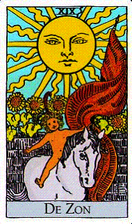
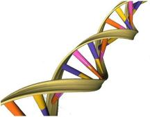
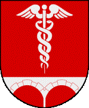

 ‘De Zon verlicht eerst zichzelf en vervolgens alle andere dingen’
Hoofdstuk 19
De Zon.
Vanaf 10 werd de concentratie op de betekenis van hetgeen mij geconditioneerd heeft, noem het karma, steeds intenser. In 19 is de hitte van die concentratie een smidse geworden waar de Magiër zich van de laatste ketenen van het ego kan bevrijden. De astrale vogel die we zijn, de feniks. maakt zich klaar uit het vuur op te stijgen.
Alle ervaring van de persoonlijkheid in ontwikkeling wil tot basis gemaakt worden van een nieuw begin. Deze laatste menging brengt de nieuwe mens voort, hij die als zoon, als verlosser, kan opstaan in het licht van het hogere, tot zover geïncarneerde, bewustzijn.
De zon en de zoon zijn in Engelse uitspraak hetzelfde.
Volgens onze eigen mythologie , maar ook hier volgens de Tarot, beschikken wij over alles dat de Zoon tot zo een belofte maakt. Bedenk echter dat als wij de elementen door en door gemengd hebben - zodat weten en ervaring één zijn geworden - dan staat de Duivel naast ons en wijst ons op de hogere macht die eenheid brengt. Lucifer, leerde 15, bedient zich bij voorbaat van zich noemende meesters.Werkelijk een streep trekken onder de opgeblazenheid van de persoonlijkheid ontwart de karmische knoop en bevrijdt ons van de verleidingen die ijdelheid ons pleegt te bieden.
De Zon voelt als een generaal pardon. Behaalde gele kaarten komen hier te vervallen
Er hoeft niets meer afgerekend te worden zodat we na kunnen denken over wat met al dat opkomende nieuwe licht, met al dat scheppingspotentieel, aan te vangen. Naast de inslagen en kraterwonden van de Maan hebben wij het helium-3, een gift van de Zon, gevonden die volgens plasmafysici kernfusie op grotere schaal - dan tot op heden in experimentele laboratoria het geval was – denkbaar maakt.
19, de Zon, is net als 10 een heroriëntatie op richtingen die nu ingeslagen kunnen worden.
De Magiër die zijn innerlijke fusiemotor (kundalini) op gang heeft gekregen ziet dat zijn laatste pijn ‘eenzaamheid’ heet. De Zon is wat energie betreft een stralende eenling in ons zonnestelsel. Het is modieus te stellen dat eenzaamheid in werkelijkheid ‘samen een zijn’ betekent. Zolang je echter een levende tussen de levenden bent is het moeilijk te accepteren dat de mensheid maar doorgaat met gesloten ogen door te racen naar de afgrond. Zij die daar oog voor hebben en aandacht vragen voor de gevaren die we gecreëerd hebben, zijn als roependen in de woestijn, een barre leegte waar kluizenaars zich op hun gemak voelen maar waar een ‘normaal’ mens het in zijn eentje niet lang redt.
In de cyclus van 10 t.m. 18 ontdekte de Magiër dat mogelijkheden niet hetzelfde zijn als wenselijkheden. De Zon is heerlijk na een lange winter maar wie er zich teveel aan over geeft loopt toenemend risico huidkanker te ontwikkelen. In 19 wordt dit dilemma in het zonnetje gezet. De vraag is, kan of mag de verlichte (dan wel een vindingrijk wetenschapper) zijn ontwaakte, hogere mogelijkheden aanwenden voor de oplossing van collectieve problemen, of dient ieder zijn eigen berg te beklimmen en in de eigen afgrond te vallen?
Het succes van de moderne geneeskunde heeft ook geleid tot overbevolkingscijfers die de toekomst van Moeder Aarde, ons aller voedster, op het spel heeft gezet.
Vergaande rationalisering in landbouwmethoden en veehouderij maken onze ethisch-emotionele ruimte steeds kaler, steeds leger. Wantrouwen - tegen de positivisten die erop rekenen dat de mens een redelijk wezen is die zich uiteindelijk ook redelijk zal gedragen – is groeiende. Verlichting heeft weinig gedaan aan de misvatting dat wij de eigenaar zijn van de natuur en mateloos kunnen nemen zonder ons af te vragen wat de gevolgen op termijn zijn voor een ecosysteem waar we nog maar heel weinig van begrijpen, laat staan beheersen. De strijd tussen materialisten en vitalisten is nog maar amper begonnen.
Positivisme en zorgeloosheid zijn kinderen van de Zon. Wij hebben vanuit edele- en onedele motieven van alles geprobeerd om elkaar’s lot te verlichten, pogingen die leidden tot het ontstaan van enorme markten en economieën die met toenemende professionalisering, en met maskers van redelijkheid, welwillendheid en kundigheid een soort onaantastbaarheid hebben gecreëerd die je ook wel in totalitaire staten aantreft. In de nieuwe hiërarchische toppen wordt uitgemaakt in welk profiel ik pas en wat goed is voor mij, en wat niet. Ik vind dat onverteerbaar maar zolang de meerderheid van mijn eventuele lezers hier niet tegen in opstand komt leggen mijn zorgen weinig gewicht in de schaal.
Verlichting kent een onfrisse relatie met de idee van meesterschap. En wie zou er niet arrogant van worden wanneer zijn persoonlijke filosofie werd verheven tot het ijkpunt van alles wat we tot onze beschaving rekenen. Als ik nu maar claim verlicht te zijn ben ik al gauw jouw meester en zal ik je wijzen op je plaats in de Hiërarchie van het Licht met alle ‘do's and don'ts’ die daar bij horen. Voor ik het weet zit ik in hetzelfde vaarwater als die andere organisatoren van idee en samenleving, en moet ik concurreren met allerlei zogenaamde morele posities die in verleden en heden werden en worden opgetuigd. En of mijn toverstaf nu ‘de rede’ wordt genoemd of ‘para-mentale toegang tot de Meesters van het Licht’, het effect is hetzelfde. Ik schep met de namen die ik gegeven heb mijn eigen lot, en omdat mijn eigenheid zo Meesterlijk is hoort dat ieders eigenheid te zijn, behalve waar het de broodlijn betreft, De verschillen tussen kansrijk en kansarm blijven groeien, en dat is wat onze geweldige ideologieën betreft geheel in de haak. Je hebt nu eenmaal bovenmeesters en ondermeesters.
Dat weinig van deze ideologen de fundamentele vernietiging van de natuur, onze ziel, tot de kern van hun kruistochten hebben gemaakt. Innerlijk geweten legt het veel te vaak af tegen onze gemankeerde opvattingen over verlichting, laat staan over de ‘logica’.
Zonneschijn is een bepaald soort schijn, maar van zo een hoge intensiteit dat onze bleke verbeelding van hoe dingen horen te zijn er in verdwijnen. Einde van de illusies.
Een Gooise schilder vertrouwde mij toe dat alles van je moet wegvallen, tot de herinnering van je naam aan toe, alvorens je doordringt naar het niets in 10 (en dus in 19). Zijn naam verliezen vond hij niet zo een probleem. Het verlies van zijn kunstenaarschap als steunbeer voor zijn beeld van identiteit was een veel zwarter gat. Maar eenmaal daar doorheen, ervoer hij de helderste bewustzijnsstaat ooit, een staat zonder berekening en beperking. Deze ervaring beleefde hij gedurende een coma na een zware operatie, die hem bij bleef bij als een magnifiek hoogtepunt die hem een rotsvast vertrouwen had gegeven in de goedheid van ‘het zijn’, dwars door leven en dood heen. Ook bleek deze uitzonderlijke staat hem voortaan van dienst te zijn in het opmerken en vastleggen van schoonheid, een Platonische deugd en voedsel voor de ziel.
In het rollenspel dat zich ontrolt is het opgeven van zelfbeelden ofwel het opgeven van de gekoesterde eigen identiteit inzet van de Zon. In de Zon hoeft niets ontwikkeld te worden maar wordt je juist afgewikkeld. Lekker aan het naaktstrand in de Zon. Alles gaat uit en wat overblijft is dat wat je bent. Alles waar je op hoopte, zij het hier op aarde dan wel in het eeuwige nabestaan blijkt gelieerd te zijn aan ego dat zich geeft losgezongen van superego, hetgeen een mens oplevert die niet altijd functioneert binnen de grenzen van het eigen geweten. De naald heeft problemen met de groef en blijft zo nu en dan hangen in eindeloze herhaling van die ene rondgang. Deze toestand kan ook vergeleken worden met een rad waar je nu eens huizenhoog wordt opgetild om dan weer diep weg te zakken. Hier zien we de affiniteit die 19 heeft met 10.
Het lijkt nobel de lijdende mensheid op een goed spoor te zetten maar in dit verlangen zit de arrogantie dat het met de mensheid minder goed gaat dan met mij. Als pijn echter een belangrijke rol heeft gespeeld in mijn ontwikkeling waarom zouden anderen dan niet hun eigen pijn mogen creëren? Ook al zouden ze daar ons hele zonnestelsel mee opblazen, een optie die sowieso steeds meer substantie krijgt.
Geest die alles voortbrengt kan niet opgeblazen worden. Als mensen reïncarneren zal dat met zonnestelsels ook wel zo zijn.
De eenzaamheid waar we in 19 naar kijken is de kooi van de nihilist, de betweter, de ideoloog of de gefrustreerde altruïst die lijdt als de oplossingen die hij voor een ander bedacht, maar zelf nooit waar heeft kunnen maken, in de wind worden geslagen. Alles in de wereld zou in orde zijn als de Meester ofwel de Verlichte het maar voor het zeggen had. Maar verlichting, tot macht verheven, is als het leiden van zonlicht door een vergrootglas. Daar heel je niet mee; daar zet je de boel mee in de fik.
Je hebt vakantie of een uurtje vrij, en je stelt je bloot aan die superminnaar die van top tot teen bij je binnendringt en je de wereld met alles wat er los en vast aan zit doet vergeten. Onder je oogleden doen zich kleurvisioenen voor en je bent volmaakt gelukkig.
De Zon plaatst ons voor een boeiende paradox; eenzaamheid aan de ene kant, een orgastisch bewustzijn aan de andere kant.
‘Spirit’ kan op allerlei manieren vertaald worden. ‘Levenskracht’ en ‘bezieling’ zijn opgenomen in dat rijtje.
Zouden we ons wat bewuster worden van de werken van de Zon dan zou blijken dat eenzaamheid en lijden in het algemeen het resultaat zijn van een leven buiten de innerlijke Zon, ofwel buiten onze natuurlijke spiritualiteit, vitaliteit en bevlogenheid. Allen die hun licht onder de korenmaat verbergen, en dat zijn er meer dan je in een verlichte samenleving zou verwachten, moeten lijden en zich losgescheurd weten van de betekenis van het leven..
We hadden het zo druk met het scheppen van veelheid, met nog meer tegenstellingen, of met het verlichten van de ander dat we steeds minder tijd hadden voor zulke simpele genoegens als de dagelijkse groet aan de Zon en het nemen, als snipperdagen of vakantie dat toelaten, van een weldadig zonnebad.
Leven met de Zon was - tot de gloeilamp op de markt kwam en industriële slavernij ons bond in de machinerie van de vooruitgang - ons oeroude ritme die nog natrilt in het opsteken van een kaarsje voor, tijdens of na kerkelijke zondagsdiensten. Zo een klein licht lijkt niet veel voor te stellen maar elke gedachte aan de bezieling die we zoeken helpt ons dat licht binnen te laten komen.
In kleur- en lichttherapieën proberen we depressie en verminderde afweer op afstand te houden, maar zij die deze lichtcompensatie voor donkere dagen aanbieden worden wat de Stichting Skepsis betreft afgedaan met een verwijzingen naar kwakzalverij, en dat geldt wat Skepsis betreft voor bijna elke gedachte over gezondheid die niet afkomstig is vanuit het steeds onbetaalbaarder wordende medisch-pharmaceutische establishment. Dat de alternatieve geneeskunde over het algemeen noch patenten verzamelt, noch aanzienlijke bedrijfsresultaten boekt, wordt zelfs door de verzekeraars over het hoofd gezien. Het zal de menslievende stichting Scepsis ontgaan zijn dat ‘alternatieve’ therapeuten harde en betrokken werkers zijn die met zeer bescheiden honoraria genoegen nemen. De afstand tot het verdienvermogen van een medisch specialist is enorm. Ik vind het tragisch dat gerenommeerde wetenschappers zonder kennis van zaken zich lenen als boegbeeld in een indrukwekkende stoet van geleerde dwaasheid. Slepsis is een wonderbaarlijke sekte steunende op types die heel precies weten hoe het niet zit, een onderneming die van alles de prijs kent maar van niets de waarde, laat staan de betekenis. Het ene moment erkennen ze het bestaan van het placebo-effect, het andere moment ontkennen ze de mogelijkheid dat geest materie beïnvloedt.
Lever echter eerst maar eens een op empirische grond bewezen stelling dat lichaam en geest – of mens en universum – geen EENHEID zijn, en dat elk deeltje drager is van iets dat we energie noemen, maar die ook intelligentie genoemd kan worden. Het natuurlijke afweersysteem is daar een mooi voorbeeld van. Mens, dier en plant zijn voorzien van een zelfgenezend vermogen dat ons, als we er open voor staan, aardig kan betoveren.
Het afweersysteem is het geheel van reacties op het binnendringen van ziekteverwekkers en andere lichaamsvreemde stoffen, lees ik in een woordenboek.
In een willekeurig opgeslagen artikel over immunologie van de plant lees ik: ‘De plant probeert nog een paar rondes zaad te produceren’
Ik vroeg me onmiddellijk af:‘ Waar haalt die plant de kennis vandaan of de wil om zich open te stellen voor het één en zich te beschermen tegen het andere?
Nieuwe inzichten hebben de klassieke mechanica , en daarmee de menselijke rede ter discussie gesteld. Objectiviteit is ver te zoeken wanneer wetenschap gebaseerd is op aannames en axioma’s.
We zien hier dat er kennelijk verschillende bronnen van verlichting zijn. Een middenpositie wordt ingenomen door Goethe, van huis uit wetenschapper, die mediteerde op de plant en stuitte op de openbaring van de oerplant, een metafysisch model waarvan alle plantensoorten zijn afgeleid. Metafysische kwaliteiten laten zich echter moeilijk onderzoeken met de meetmethoden van een empirisch, materialistisch en mechanistisch ingestelde wetenschap die er nog niet aan toe is de onderliggende, quantummechanische tovertuin te omhelzen en terug te keren naar een wat holistischer opstelling ten aanzien van chaos en orde, van ziekte en gezondheid. Op een geneeskunde die onbetaalbaar wordt en steeds meer afbreuk doet aan die mysterieuze kwaliteiten die we toeschrijven aan het afweersysteem zitten we niet te wachten, en nog minder op raaskallende hoogleraren die denken dat de mens die straks in goede gezondheid 1000 jaar of ouder kan worden al geboren is.
In occulte omgevingen wordt onder verlichting iets heel anders verstaan dan de verlichting die we associëren met de Eeuw van de Rede. Daar is juist het loslaten van de mentale stroom, en dus ook van de ratio, voorwaarde voor verlichting.
Het ongeloof (toch ook een soort geloof) van Scepsis is minstens zo moeilijk te bestrijden als het fundamentalisme van weer een andere sekte, zo goed als het moeilijker is om onschuld te bewijzen dan schuld. Het is ook niet nodig hier om al of niet aan te tonen dat teveel zich noemende wetenschappers, wetenschappelijke integriteit verwarren met reactie. Orthodoxie is mooi maar onbevooroordeeldheid is mooier. En ik wil nog wel eens zien hoe deze profeten van een achterhaalde opvatting over de natuur van mens, ziel en heelal gaan denken wanneer ze zichzelf een keer geven aan het mysterie van het gebruik van LSD of een verkeerd gedoseerd homeopathisch middel als Bella Donna, die acuut levensbedreigend kan zijn. Het heeft maar heel weinig gescheeld of ik was een vriendin die aan hevige migraine leed kwijt geraakt. Het was een homeopaat die de levensgevaarlijke, homeopathische dosis toediende. Het was een homeopathische arts die redding bracht en een middel in zijn tas had om de Bella Donna onschadelijk te maken. Ik wil geen bijdrage leveren aan de ideeënstrijd tussen specialist en holist. Ik hoop slechts dat ze leren naar elkaar te luisteren en in te zien wat mechanische-, wat biologische, wat psychologische- en wat spirituele problemen zijn. Dat zou al een goede stap zijn. De Zon verlicht alle dingen maar dan moeten we ons wel blootgeven, en in dat licht gaan staan.
De kluizenaar heeft de comfortabele vlakte achter zich gelaten. In zoverre hij daar een rol heeft gespeeld zal hij hier afscheid moeten nemen van zeg maar zijn oude zelf; iets dat in veel gevallen alleen maar lukt als je het licht hebt gezien. Niets is motiverender dan een inkijkje in de toekomst van het eigen bewustzijn. Iets begrijpen is mooi; maar iets beleven dat verandert je bestaan. De Zon komt elke dag weer op. De kansen die we krijgen zijn ontelbaar. Open de ramen en de deuren, en laat dat licht binnen stromen.
‘Niets is zo snel als het Licht’, is een stelling die voorlopig niet bewezen kan worden. Het meetbare deel van het spectrum.zal hoogstwaarschijnlijk voldoen aan de denknoodzaak onze materiële omgeving - voor zover we die kennen - te beschouwen als de maat van alle dingen. Maar in een meerwaardige benadering van die omgeving - waar ook rekening wordt gehouden met probabilisme, en onbegrijpelijkheden als ‘entanglement’, onzekerheidsrelatie of padintegralen – en met het bestaan van meer dimensies dan waar we ooit rekening mee hebben gehouden komen zelfs de zekerheden van Albert Einstein onder druk te staan, en onzekerheid staat aan de wieg van chaos. Einstein zag god als het icoon van het determinisme, en kwam met zijn door persoonlijk, esthetisch gekleurde uitspraak: ‘God dobbelt niet!’! in een opmerkelijke, maar niet echt wetenschappelijke positie.
In de parapsychologie werd en wordt veel aandacht gegeven aan verschijnselen die bestaande definities over tijd en ruimte vanuit de klassieke mechanica tarten. Telepathie, tijdreizen, de voorschouw, buitenzintuiglijke waarneming, psychokinese en veel andere fenomenen behoren daartoe en laten zich niet vangen in de dogmatiek van een denkrichting die gelooft dat iets pas bestaat als het in het in een comfortabel, overeen gekomen wiskundige model past.
Wikipedia vertelt me: ‘Aangezien de parapsychologie na honderd jaar onderzoek geen verifieerbare theorie heeft opgeleverd, zijn veel wetenschappers van mening dat de parapsychologische werking niet bestaat’. Ik begrijp het niet en dus bestaat het niet. Van Gaal zou zeggen, ‘Ben ik nou zo slim is, of jij zo dom?’
Aan hen die er moeite mee hebben dat een falende basisschoolleerling, ik dus, hier de ‘kerk van de klassieke mechanica’ met een inherent ‘geestlichaam probleem’ meent te mogen afbranden bied ik de gedachte: ‘Al het brandbare staat in relatie met betekenissen die ik zoek in het zonnearchetype. En daar hoort afbranden (fakkelen) ook bij. Ik doe mijn best!
In het licht van de symboliek kan ook gekeken worden naar de ‘burn-out’. Burn-out staat bekend onder de naam, ‘Emotional Exhaustion Syndrome’, en associeert met acceleratie en de snelheid van licht. We kunnen onszelf niet bijhouden of zijn niet vooruit te branden. Hoe ook, in stress, drift en passie wordt ter voorkoming van een blow-up veel stoom afgeblazen.
Vuur staat voor de gedachte dat alles voortgekomen is uit energie. Water draagt die energie, doet die energie stromen. Vuur en water gaven al eerder een impuls aan de ontwikkeling van allerlei krachtwerktuigen. De industriële revolutie was een revolutie in stoom. Al zijn er nog wel wat problemen op te lossen, het ziet er toch naar uit dat we bewegen in een richting waar waterstof een interessante ontwikkeling tegemoet mag zien.
Koude kernfusie, als we nog een stap verder durven te denken, kan op grote schaal energie leveren voor de productie van waterstof, en dan zwijg ik nog maar over ‘solar towers’ die we in woestijngebieden kunnen bouwen, waarmee ook een slag kan worden geslagen in de richting van herverdeling van kans en inkomen - maar ook van ontwikkeling van landbouwgronden en zoetwaterproductie. Kortom de Zon blijft mij voeden met het optimisme van een dwaas.
Wat een weelde die combinatie van brandstofcel en waterstof, van vuur en water.
De vergelijkingen die ik hier kan maken met de bronnen van eigen fysische, dan wel psychische energie creëren bewustzijnseffecten die ik als verlichtend ervaar. Het verbindt mij met de energie die is opgeslagen in de bindingen tussen deeltjes, atoomkernen en ander klein spul. In de diepte van ons zijn gaat het natuurlijk om steeds betere verbindingen tussen het bewuste en het onbewuste. De bewustzijnsverruiming die daar het resultaat van is vergroot als het ware de afstand tussen de kern en het elektron en daarmee de hoeveelheid energie.
De opwarming van emotie geeft ons terug wat we ergens onderweg verloren. Onbaatzuchtige liefde is een regelrechte afstammeling van alle licht en warmte waartoe wij in staat zijn.
(Wikipedia) De Engelse econoom Richard Layard gaat in zijn boek ‘Happiness’ op zoek naar nieuwe economische en bestuurlijke strategieën om de samenleving geluk te brengen. ,,Psychologen weten veel dingen over ons die economen niet weten, of niet willen toegeven''.
We zijn heel veel rijker dan vijftig jaar geleden, we hebben mooiere huizen, grotere auto's, gaan op reis, we zijn beter opgeleid en hebben vaak interessanter werk, en we zijn gezonder. Toch zijn we niet gelukkiger. Hoe kan dat? En hoe kunnen wij - en degenen die ons besturen - dan wél het geluk bevorderen? Deze vragen waren voor Richard aanleiding om het boek ‘Happiness. Lessons from a New Science te schrijven ,,Onze samenleving moet zich niet richten op dynamische efficiëntie, maar op het streven naar geluk. Doel van de politiek moet zijn om de wereld voor zijn burgers tot een vriendelijker oord te maken, niet tot een stormbaan.''
Geluk is vaak een uitgesteld genoegen. Velen projecteren hun geluk op een bestaan na de pensionering of zelfs na de dood. Voor hen moet verhoging van de pensioenleeftijd een bittere pil zijn.
Er zijn aanzetten tot bezinning maar die zijn nog marginaal. Het samenbrengen van economie en psychologie kan ik alleen maar toejuichen. Natuurlijk is samenwerking superieur aan competitie, maar leg dat de verstokte neoliberaal maar uit. Niet de hoogte van een inkomen is trouwens zo belangrijk maar de zekerheid dat we morgen of volgend jaar nog een inkomen hebben; dat wordt belangrijk bevonden.
Anderzijds houd ik ook rekening met het geluk van de ongelukkigen. In het karmische spel worden oude rekeningen vereffend, en wordt het lijden gezien als een wegwijzer op de weg maar het bereiken van zelfkennis en een betere balans. Ik heb geen tv nodig om te weten dat sado masochisme nog altijd een populaire tak van sport is.
Uiteindelijk zou het wel eens zo kunnen zijn dat de (Cartesiaanse) scheiding van lichaam en geest een monster heeft gebaard, maar met die gedachte kom ik niet verder als ik hier niet een of andere spirituele dimensie bij betrek, en daar wordt de Stichting Scepsis dan weer niet blij van. Als geluk iets te maken heeft met zonneschijn dan moet mijn motto, ‘de zon verlicht eerst zichzelf en vervolgens alle andere dingen’, ook op het fenomeen ‘geluk’ van toepassing worden verklaard.
Wat geluk ook moge zijn, het lijkt onmogelijk er een norm of een definitie voor te vinden
Geluk verwijst naar fortuinlijke omstandigheden maar ook naar toeval, hetzelfde toeval dat bepaalt of ik de Dwaas of de Magiër te zien krijg als ik de kaarten heb geschud en blind heb geselecteerd en gelegd, of onder welke stand van de Zon ik geboren ben. Geluk lijkt me net als Chaos een orde te zijn die we in eigenwijze kippigheid nog niet helemaal begrijpen, en herinnert mij aan het zoeken naar mijn bril die al die tijd stevig op mijn neus zat. Wat we zien of niet zien is een spel van licht en duisternis, van bewustheid en onbewustheid.
Maar toeval bestaat toch helemaal niet! Dat lijkt een waarheid als een koe, maar Nul bleek toch ook niet niks te zijn en zo lang er waarschijnlijkheid bestaat, zo lang is er leven.
Misschien kan ik hier concluderen dat er geen collectieve oplossingen bestaan,.en dat het enige wat we allemaal gemeen hebben de omstandigheid is dat we van elkaar verschillen, verschillen die opgelost worden in liefdevolle vereniging., een bad in elkaars zonneveld, ofwel in de vermenging van twee aura’s. Fusie, de droom van onze generatie! W aar twee of drie verenigd zijn in zijn naam, worden verbindingen gemaakt met iet dat je verlossing zou kunnen noemen.
.
Voor de een is ‘de rede’ een veilige ankerplaats, terwijl het voor een ander de opsluiting is in denkpatronen die moeilijk te verzoenen zijn met de vrijdenkerij waartoe ik mezelf zo graag beken. Voor mij is ‘de rede’ gelijk aan opinie, en opinies zijn per definitie optioneel
Dat wat iemand toevalt is voor menigeen een goede definitie van toeval. Maar in mijn poging te achterhalen waar de val van toeval begint kom ik in een wereld terecht waar het eten van de boom van kennis van goed en kwaad directe aanleiding is tot zeg maar onze oerval. Goed of kwaad, ja of nee, waar of niet waar; al in een heel vroeg stadium van ontwikkeling worden we gewaarschuwd voor een tweewaardige logica die ons gevangen houdt in onvruchtbaar dualisme.
19 = 1 + 9 = 10 = 1 + 0 = 1
Eenheid heeft van zichzelf geen stem Er is altijd een medium, een context of een spiegel nodig om de aanwezigheid en identiteit van eenheid op het spoor te komen.
6 plus 4 creëert een ander beeld van eenheid dan 19 min 9. Dit past in de opvatting dat in taal de schijn van de zon erg lijkt op de waan van de maan.. Een zonnesteek kan makkelijk verward worden met de toestand van een zoeker die zich, gedreven door ongeduld en begeerte, teveel blootstelt aan het openbaringspotentieel van het innerlijke licht.
De relatie tussen bewustzijn en context is zo nauw dat we ze makkelijk met elkaar verwarren. Ik hoorde me gisteren zeggen ‘De waarheid is universeel maar de manier waarop we die waarheid verwoorden en ervaren is gebonden aan culturele a-priori’s.
In de Tarot wordt de context van 19 ingevuld met een kind dat, gezeten op een schimmel, onder eigen vlag zijn achtergrond achter zich laat. De symboliek van de vlag verwijst ook naar heraldiek en het geven van namen; verwijst kortom naar ‘identiteit’ Mijn mantra voor vandaag is: ‘De identiteit van mijn ik – lijkt mij - is ‘het ik’ Maar wat betekent dat ik?
Welke identiteit ik me ook moge aanmeten er zal altijd een zweem van schijn over mijn keuze hangen. Dat wat zo eigen lijkt te zijn blijkt toch steeds weer een mengeling te zijn van een beetje bewustzijn en een heleboel onbewustzijn. Ik weet niet eens het antwoord op de vraag, ‘ In welke mate wordt mijn identiteit bepaald door genetische, sociale of culturele gegevenheden?’
Als er beweerd wordt dat de geschiedenis zich herhaalt wordt daar wellicht mee bedoeld dat we steeds antwoorden ontwikkelen vanuit die a-priori’s, gegevenheden waardoor het lijkt alsof we nooit iets leren, laat staan ons verbeteren.
Alle gegevenheden die denkbaar zijn creëren gezamenlijk de ijzeren hand van de meester die ons vasthoudt in iets dat we onze werkelijkheid noemen. Maar of we die gegevenheden nu archetypen noemen of paradigma, ze houden toch vooral ook de ruimte in stand waar we kunnen experimenteren met datgene wat we belangrijk vinden, en dat is het leven te leven, en daar en passant bewustzijn bij te ontwikkelen..
De achtergrond waar het zonnekind zich van losmaakt is die stoet van aannames, a-priori’s, beelden en zelfbeelden die ons verhinderen de dingen te zien zoals ze zijn.
Leven met de rijzende en dalende Zon reflecteerde, tot de uitvinding van de gloeilamp, ons natuurlijke ritme, en bracht heel wat culturen een framework voor rite en eredienst. Het hield ons ‘s winters langer in bed, wat heel aangenaam was, en het veroorloofde ons een leven waarin het bereiken van een nieuwe lente telkens weer ervaren kon worden als de vervulling van een belofte.
Vuur en pijn liggen dicht bij elkaar. Het vuur, waar pijn een symptoom van is, genas of verteerde je. Te hevige pijn bracht je in shock die uittreding mogelijk maakte. Het verblijf in de buitenlichamelijke ruimte toonde in visoenen wat we in het aards gebonden bewustzijn over het hoofd zagen. Treedt het bewustzijn weer terug in het fysieke lichaam dan zorgt de hoge energie van de meegebrachte visioenen voor genezing. Doet het dit om karmische redenen niet dan is reïncarnatie een voor de hand liggend alternatief.
Pijn is etymologisch verbonden met ‘poena’, hetgeen voor ‘boete’ staat en voor ‘straf’. Onze relatie met pijn heeft aldus een morele dimensie waar moderne geneeskunde (maar ook de gemiddelde patiënt) niets of weinig mee op heeft. Pas wanneer we in stukken dreigen te breken van de pijn wenden we ons tot de oude intuïties die ons influisteren waar en hoe we onszelf kunnen verbeteren.
Begrijpen we dat liefde ook een soort uittreding naar elkaar toe is dan mag duidelijk zijn waarom zonneschijn door artsen die nog tijd hebben van hun administratie op te kijken best aanbevolen zou kunnen worden als geneesmiddel.
Symbolisch gesproken is de Zon een uitwerking van de Magiër (19 = 10 = 1))die zich moest ontwikkelen van tovenaarsleerling naar meesterschap. Meesterschap over zichzelf wel te verstaan.
De snelheid waarmee energie reist verbindt de menselijke ervaring – middels radio, teevee, telefonie en Internet - tot één mondiale tsunami van gebeurtenissen. Glasvezelnetwerken representeren ongekende versnelling en uitbreiding van samenwerking en rekenkracht, en van al datgene waar we in de huidige, technologische kennisexplosie op zouden mogen rekenen. Als er al ooit de noodzaak was om techniek en natuur of wetenschap en spiritualiteit als samenhangende systemen te bestuderen dan is het wel nu. De meerwaarde daarvan is de ontdekking dat de integratie van heel verschillende dimensies openingen maakt naar wat we ik in de Zon het Bovenbewuste noem.
Het verbinden is vooral ook een energetische gebeurtenis zonder precedent en vindt plaats binnen de grammaticaregels van ons DNA (fysiek), maar ook in de quantumtheoretische ruimte waar deeltjes zich gedragen als een golf en een golf als een stroom van deeltjes. De quantummechanica haalt terug wat we in de laatste paar duizend jaar zo hardnekkig hebben geprobeerd uit te bannen. De ziel, de geest van lichaam en natuur; we snakken naar vereniging.
De schreeuw in de martelkamers van Poetin en zijn voorgangers, de honger in door klimaatgeweld geteisterde gebieden, de wanhoop in vluchtelingenkampen, de woede van lokale groepen die moeten toezien hoe hun regeringen visgronden, olie en gasvoorraden of ontginningsgebieden (lees tropisch regenwoud) uitventen aan vreemde mogendheden, de eigen bevolking uitleverend aan vervuiling en wanhoop. En als die verworpenen der aarde terugslaan dan noemen we ze terroristen.
Schuld en boete daar zijn schuld en boete hier geworden. De ogenblikkelijkheid waarmee de pijn van onrecht terugkaatst op de eigen morele configuratie, is juist vanwege de mondialiserende tendensen een toenemende last. Of we met onze kennis van de noden in de wereld onze handen in onschuld mogen wassen is nauwelijks meer een vraag.
Zolang we ons herinneren dat de Zon voor iedereen schijnt mag het geestelijk licht van de Zon de vuile was op onze bleekveldjes weer toonbaar maken. Hoe meer we dat licht delen hoe meer licht er ook is. Verlichting die niet gedeeld wordt leidt tot conflict en schade die niet gedekt wordt door enig verzekeringsbedrijf.
Het voortdurend terugkeren van de Zon kan vergeleken worden met het gemak waarmee we steeds weer teruggrijpen op onze vooroordelen en stelligheden Maar aannames, axioma’s en a-priori’s zijn slagschaduwen van het luie denken. En voor een heleboel van die onzin zijn we, zoals steeds weer blijkt, zelfs bereid te sterven.
Een van de redenen waarom ik toch goed met filosofen kan opschieten komt van de instemming met de idee dat filosofie weinig meer te maken heeft met liefde voor wijsheid. Als je eenmaal het punt hebt bereikt waar ‘leven’ is gedegradeerd tot een machinaal proces dat van A tot Z gekend en dus voorspeld kan worden, dan wil je jezelf niet meer kennen; dan dooft het licht en moeten we ons wapenen tegen de zwarte slagorden van misleiding en nihilisme .
Niet de menselijke geest had haar laatste adem uitgeblazen, nee ‘God was dood’. De geweigerde vraag naar ‘het leven’ werd een enkele reis richting hersendood voor de filosoof. Net als de psychiatrie, viel de filosofie voor de verleiding van de wetenschap, en moest dus zelf ook wetenschappelijk te werk gaan. Maar filosofie is geen wetenschap. Filosofie is, net als heelkunde, een kunst. Het onderscheid tussen die twee loopt parallel aan dat van het goud dat we opstapelen in onze kelders en bunkers, en het innerlijke goud van inwijding en ontwikkeling,
De filosofie van de Zwarte Zon zoals we die in het Westen kennen is een samenraapsel van mythologische, alchemistische, satanistische en theosofische rudimenten. Aannemende dat de zwarte lichten de spirituele positie van de student markeren, kan ik hier mijn bespiegelingen over de relatie tussen boven- en onderbewustzijn wat meer funderen in de grote symbolen die we daarvoor hebben, zoals het yinyang of de twee slangen van de Caduceus. De staf zelf staat voor de as tussen de hemel en de aarde, boven en beneden. Noem het een ruimtelift.
De hermetische traditie wordt in deze kringen als een gevleugelde wetenschap stevig omarmd. Op de weg terug naar het sjamanisme kom je al deze mythologische- dan wel esoterische stromingen en afsplitsing van stromingen tegen. Volgelingen noemen zich studenten op het pad van de linkerhand. En daar ligt denk ik een probleem. Waar volgelingen zijn, zijn meesters die of ze dat nu willen of niet de volgelingen aan een schijnidentiteit helpen. Een goede vriend noemt zichzelf niet alleen sjamaan maar ook ingewijde in de ik weet niet hoeveelste graad.
Als ik muziek zoek in mijn proza dan is Hermes, de uitvinder van de lier, mijn inspirerende voorbeeld. In mijn eigen ontwikkeling komt het me voor dat het hermetische ‘zo boven zo beneden’ niet alleen schoonheid biedt maar ook inzicht en wijsheid. Het is de vereniging van taal met schoonheid die mij verbindt met hemelse harmonieën.
Hoe hoger je gaat op de ladder hoe meer je je zou kunnen identificeren met een werelds soort van Meesterschap. Naar mijn smaak een gevaarlijke onderneming omdat verlichting van binnen uit komt en niet van de buitenwereld, al is die nog zo meesterlijk. Het nemen van voorschot op onze feitelijke ontwikkeling kan de bedrading doen smelten, waarna het lampje uitgaat. Prometheus, de vooruitdenkende, die het licht stal en het aan de mensheid schonk bereidde ons een technische evolutie zonder weerga, maar ook het vermogen om het positieve en het negatieve van nieuwe kennis en uitvindingen te overzien. .
Voor sommigen is Lucifer de Duivel, voor anderen is hij de Christus die de kwaliteiten van innerlijk en uiterlijk goud in balans houdt. Wie van sprookjes houdt vindt in deze lagen van bewustzijn en onbewustzijn apocalyptische schoonheid.
Onze verlichting komt van de Zon en niet van onze opvattingen over de Zon, zegt de rationalist in mij. Maar zoals de intentie van de onderzoeker zijn onderzoek beïnvloedt zo ook hebben al onze opvattingen de neiging werkelijkheden te scheppen, want de Magiër verliest wel zijn haren maar niet zijn streken.
De Zon confronteert ons met misplaatst meesterschap en dus met hoogmoed. Jezelf hoger, wijzer of moreler achten dan je broeders en zusters leidt onherroepelijk tot een val. Hetgeen heel vervelend is voor diegenen die juist alleen maar willen stijgen.
Zwarte magie wordt al iets minder gevaarlijk wanneer we ons blijven realiseren dat de Arabische wortel van het woord ‘zwart’ eveneens staat voor het begrip ‘wijsheid’.
In hoeverre kennis goed of kwaad is voor ons wordt niet bepaald door die kennis maar door de morele kwaliteiten van de student. Verlichting is een paradoxaal spel waar het helemaal nog niet is uitgemaakt of de Zon de schepper is van de mens of de mens de schepper van de Zon. Het is maar net vanuit welke dimensie je de zaak bekijkt.
Lucifer staat behalve voor de Duivel ook voor Lichtbrenger, Morgenster en Dageraad.
Verrassing! Venus - zegt de encyclopedie - is de Morgenster.
Is de duivel dan een symbool van Liefde? Als dat zo is mag aangenomen worden dat echt alles voortkomt uit de liefde. Toch wel een elegante manier om dualiteit buiten de deur te zetten. De nabestaanden van de genocide op de joden lijken weinig redenen te hebben om te delen in die roes van esoterische liefde en geluk. Maar ook het hele grote lijden kan omgezet worden in nieuwe vormen van verlichting of spiritualiteit. Dat in het opstoken van het innerlijk vuur communicatie tussen de levenden en de doden hersteld kan worden is een concept dat helaas in het zionisme, maar ook in andere kringen, weinig aanhang kent. Misschien is het het ontbreken van de belofte van een hemel en het uitstellen van geluk door uit te gaan van ‘olam haba’, ofwel ‘van een wereld die komen zal’, mede oorzaak van de vele vormen van uitsluiting en genocide die het joodse volk hebben moeten verdragen .
De opkomst van de Zon is verbonden met de idee van ontwaken. Eerst komt het ontwaken voor datgene van wat en wie we eigenlijk zijn, en vervolgens komt er een ontwaken van de manier waarop het veelal ongedefinieerde Zelf past in het schema van verleden, heden en toekomst of dat van onder en boven. Het zijn allemaal verschillende posities van waaruit we onszelf kunnen bekijken.
In het betrekken van de vele, mogelijke posities zie ik een stappenplan, mogelijk ingesteld om mij te weerhouden te snel op mijn doel af te gaan. Want ook het doel is een nog niet opgehelderd raadsel, zeker als we ons nog grotendeels onbewust bewegen van incident naar incident, van toeval naar toeval.
Wikipedia: ‘Russische taalkundigen ontdekten dat de genetische code, speciaal in de ogenschijnlijk ongebruikte 90% DNA, volgens dezelfde regels werkt als alle menselijke talen.
Het menselijk DNA is als een biologisch internet en op vele fronten superieur ten opzichte van het kunstmatige internet. Russisch wetenschappelijke onderzoek postuleert (mijn woorden) directe of indirecte, verbanden met fenomenen als helderziendheid, intuïtie, spontaan of het op afstand genezen, zelfgenezing, affirmatietechnieken, ongebruikelijk licht / aura's rond mensen, de geestelijke invloed op het weerpatroon en meer’.
‘Slechts 10 procent van het DNA wordt gebruikt voor het bouwen van proteïnen. Het is dit gedeelte van het DNA dat de interesse had van de onderzoekers. De andere 90 % werd beschouwd als junk-DNA. De Russische onderzoekers waren er echter van overtuigd dat de natuur niet dom is. Taalkundigen en genetici bundelen nu hun krachten om deze 90% junk-DNA aan een grondig onderzoek te onderwerpen’
De 90% waar hier naar verwezen wordt vergelijkt niet onaardig met het veronderstelde hoge percentage van donkere materie en energie.
Het donkere associeert met het vrouwelijke. We hebben het vrouwelijke en het natuurlijke al zo lang zwart gemaakt. De Zwarte Madonna of de Zwarte Maan, een raadselachtige versie van de Godin, die mij herinnert aan de problematische oorsprong van de Mariaverering is hoe dan ook makkelijker te begrijpen dan een paradoxale Zwarte Zon. Zoals we Afrika (het zwarte werelddeel) aanwijzen als de bakermat van de mensheid zo kunnen Isis (maar ook Lilith) beschouwd worden als symbool voor de bron ofwel het moederschap van al onze ideeën, culturen en toekomst.
Maar net als in verhalen die gaan over huizen zonder vaders moet ik zoeken naar de betekenis van de afwezigheid van de Zwarte Zon. In de astrologie wordt gesproken over de ‘zwarte lichten’.
Deze zouden zijn ontstaan vanwege een behoefte (noodzaak wellicht) de spirituele dimensie van een post-jungiaanse astrologie uit te breiden. Noem het de vereniging van twee tamelijk radicale denksystemen; de quantummechanica en de Jungiaanse, analytische psychologie.
In de nieuwe astrologie worden de snijlijnen van maan, zon en aarde doorgetrokken naar de verste uithoeken van ons zonnestelsel.
Zwart verwijst naar hetgeen verborgen is. Het Sol Neger Is net als goud de innerlijke schat waar de alchemist naar op zoek was, en nog steeds naar op zoek is. Zou de graal gemaakt zijn van zwart goud?
De fascinatie voor de zwarte madonna komt aardig overeen met het menselijke verlangen te heersen over de eigen binnenwereld of het onbewuste.
Ik denk en huiver nu ik mij richt op de overeenkomst tussen het collectief onbewuste en de donkere materie waar ons heelal hoofdzakelijk uit bestaat, en waarbij het eigen DNA als tolk tussen die twee optreedt.
Naarmate we meer ogen openen die op het heelal zijn gericht en we steeds meer informatie ontvangen over fenomenen waar we tot voor kort geen idee van hadden komen steeds meer comfortabele aannames en zekerheden in de problemen. Exoplaneten, samensmeltende sterrenhopen, vampiersterren, gammaflitsen, hete Jupiters en vele andere ‘topics’ dwingen de symbolist om andere vergelijkingen toe te laten, en dus ook andere hypothesen.
Er zijn quantumtheoretici die worstelen met ideeën aangaande ‘non-lokaliteit’, ‘onderlinge verbondenheid’ of/en ‘sneller dan licht snelheden’
David Bohm kwam op het idee van een holografisch model waarin elk deeltje het geheel bevat.
Kortom de analogie tussen het jargon van astronoom en fysicus enerzijds, en dat van de occultist anderzijds - valt steeds moeilijker over het hoofd te zien. De kaarsjes die we buiten opsteken verlichten ons van binnen. De lichtjes buiten in de oneindigheid van sterrenhopen doen mij denken aan wegenkaarten die de weg wijzen in de binnenwereld..
De Zon is een creatie van de Grote Moeder die ons in onze contemplaties de weg wijst naar de binnenwereld. Meesterschap hier is de creatieve kracht die ons dwingt stuurman te zijn in eigen ontwikkeling.
Wie zich meester waant moet ook de verantwoordelijkheid accepteren die dit zelfbeeld met zich meebrengt.
De naam Esther die wat wij in schoonheid zoeken verwijst naar zowel een Ster als naar de vrouw, maar ook naar ‘dat wat verborgen is; . Steeds weer vind ik in allerlei mythologieën verwijzingen naar de vrouwelijke aard van de Zon. Dat er dus een zwarte zon wordt ingevoerd om de vrouwelijke kant van alles dat we als mannelijk beschouwen voelbaar te maken, ligt eigenlijk voor de hand.
Zwart gaat over het verborgene dan wel over de binnenwereld. We zoeken onze verlichting in die binnenwereld en niet in de spotlights voor hen die kost wat kost gezien moeten worden; waarbij je kunt denken aan een toch wel wat hilarische, ‘bekende-nederlander-cultuur’
Er is een radioprogramma dat elke uitzending eindigt met de woorden, ‘En vergeet niet, altijd schijnt ergens de Zon’. De interpretatie van het innerlijke licht bepaalt onze op- en neergangen in de schemerwereld. Is dat licht van mij of is het - zoals mythen vertellen - gestolen goed?
Uit die interpretatie volgt ook de mogelijkheid om zo geraakt te worden dat er een veranderingsproces op gang komt die expressie is van genade ofwel bewustzijnsverruiming.
Licht is op quantumniveau een drager van informatie die wij nog niet kunnen meten of lezen zonder een sleutel. Het is om die reden dat symboolstudie en toenemend gevoel voor een allesomvattende synchroniciteit als wegen gezien worden, wegen naar het verstaan van onze innerlijke belevenissen, een droomwoordenboek zonder begin of eind.
19 = 10 = 1, en 1 is de Magiër die de vier elementen schikt en herschikt totdat het uiterlijke beeld samenvalt met het innerlijke beeld. Anders dan de wetenschapper moet de Magiër uitgaan van het zichtbare en het onzichtbare. Alles is energie. Door de vier elementen in de eigen binnenwereld te meten en te herschikken neemt het bewustzijn toe van de energetische aard van alles wat we doen, denken, voelen en creëren Omdat de ware aard van het heelal niet anders is dan dat van een individu in zijn sociale context is de onderliggende energetische aard van al het geschapene de verbinding met wat je maar wilt.
Scepsis hier is de norm. Maar die komt voort uit onbekendheid met het zelf; en ben ik dit project niet begonnen om tot zelfkennis te komen zonder daar de helft van de dag voor op mijn hoofd te moeten staan? En ook al is geloof de pijler onder welk zelfbeeld dan ook, en zijn de teksten in ‘Vallen in Getallen’ eerder een geloofsbelijdenis dan dat ze een bijdrage zouden leveren aan betrouwbare, meetbare en herhaalbare kennis van veronderstelde objectieve ‘werkelijkheden’.
William noteerde in zijn laatste brief, ‘Mijn gedachten gaan vaak op reis in de gravitatiewereld’.
Er zit heel wat ‘geloof’ in zo een bewering. Ik zie daar veronderstellingen over gedachten die van jou, van mij, van een zwarte engel of een noëtische (Teilhard) sfeer kunnen zijn, en over van alles en nog wat kunnen gaan, ook over de mogelijkheid om te reizen in een ruimte die wellicht zuiver metafysisch is. De bereidheid om desnoods elke dag van identiteit te veranderen biedt mogelijkheden om onze verslaving aan ‘werkelijkheid’ en dat reservoir aan vooroordelen en vastgeroeste opinies in beweging te krijgen.
Voor iemand als William, mijn kabbalistische vriend, die gelooft dat je niet moet geloven wat je gelooft, een interessante uitspraak die wondermooi mee-marcheert met ideeën van Inno, mijn filosofische vriend, die van mening is dat het collectieve bewustzijn zoals we daar nu naar kijken, gebaseerd is op iets wat hij metafysisch realisme noemt, hetgeen in uiterste consequentie zou betekenen dat alle kennis in feite geloof is.
Dat maakt onze correspondentie zo hartig. Ik sta persoonlijk op het standpunt dat zonder geloof de bodem onder ons bestaan verdwijnt; zeker als ik bedenk dat in het rijtje ‘geloof, hoop en liefde’ - geloof op de eerste plaats komt. Het is denkbaar dat het kruis waar we aan hangen net zo goed ‘geloof’ genoemd kan worden. Dat kruis verbindt mijn horizontalisme met mijn verticalisme. Het is hier als met de zogenaamde tegenstelling tussen God en Godin. Aan de student wordt gevraagd deze twee in balans te brengen. Het ene in het andere te zien is het versmeltingproces dat ons leert waar orgasme toe in staat is,
Ik begrijp best dat een ‘hardcore’ fysicus van de oude school niets moet weten van dobbelende goden, of van ‘een slang’ die net als ‘geloof, zo een rijke etymologische afkomst kent dat elk individu hier wel een eigen kosmologie uit kan samenstellen. Onbewuste hypothesen zijn ook hypothesen. De mening dat we allemaal een mening hebben lijkt te wijzen op een soort van noodzaak. Noem het geloof tegen wil en dank. Ik heb wel eens te doen met rationalisten en empirici die tegen de klippen op virtueel goud uit virtueel stro trachten te spinnen.
Een leven zonder Maan kan ik me makkelijker voorstellen dan een leven zonder Zon. De noodzaak om met de zwaartekracht neer te dalen in onbekende krochten van mijn materialiteit legt het bij mij nog steeds af tegen de constante behoefte aan overlevingsenergie zoals dat het geval is in de gehele ecologische keten. In werkelijkheid, wat dat ook maar zijn moge, zie ik in dat de Zon de schepper is van ons zonnestelsel en de Maan reflecteert op al onze scheppingsdaden.
Na het, ‘waar komt mijn zogenaamde kennis vandaan’ volgt de vraag, ‘waar komt mijn geloof, waar komen mijn overtuigingen vandaan’. Een legitieme vraag voor elke wetenschapper die theoretisch werk verricht op basis van dogma’s en axioma’s. Voor elke wetenschapper dus!
Aangezien elke Ster uniek is in massa, afmeting, lichtkracht, helderheid, spectraalklasse, levensduur en levensloop beschouw ik de totaliteit van alle sterren als een symfonie waar ons zonnestelsel, maar ook dat ene foton-deeltje of golf, één noot van is.
Dat wat in ons zonnestelsel geraakt wordt door het licht van de Zon ontvangt als het ware een download van een unieke configuratie waarin afkomst en toekomst van ons stelsel zijn te onderscheiden. Als we het licht hebben gezien zeggen we ‘eureka’ en betreden we nieuwe studiegebieden. Informatie zonder context bestaat niet. Wij zijn die context, zoals de wassende stroom van waarneming en ontdekking een context is waarin onze beelden en dogma’s aangepast worden aan nog niet begrepen, nog onbekende informatie en veronderstellingen, ook al komen die uit de ‘brainbox’ van onze minst aangepaste nerds. De manier waarop dit ‘licht voor iedereen’ neerdaalt laat de veronderstelling toe dat alle archetypische informatie in elk contact aangepast wordt aan de lokale context Die context waaiert uit in vier richtingen en betreft het emotionele, het mentale, het fysieke en het transcendentale (creatieve) deel van onze set-up.
De westerse filosofie heeft geworsteld met de idee van kennis. Twee hoofdrichtingen ontwikkelden zich in de kennistheorie. Epistemolologie en Ontologie moesten deeltje en tegendeeltje worden in wat we dan maar de dualistische gaarkeuken zullen noemen. In het geloof in wederkerigheid ofwel in de magische laag die we synchroniciteit noemen vormen de hemellichamen de mens, zoals menselijk bewustzijn de hemel modelleert, dan wel inzichtelijk maakt.
 Een dogma van betekenis gaat omgetwijfeld over de snelheid waarmee licht reist. Radiogolven of memen gedragen zich in de tijd ongeveer als genen in de evolutie, lees ik in Wikipedia.
In DNA uit te vinden wat nu precis haar functie is als interface tussen kosmos en individueel bewustzijn is een formidabele uitdaging. Zouden radiogolven gevangen zijn in de snelheid van licht dan zou kennis per definitie eindig zijn.. De uitdaging om geest en lichaam als een eenheid te ervaren is een ontmoedigende formadibiliteit. Maar zonder een bepaalde vorm van tijdreizen zouden herinnering en voorschouw geen deel kunnen uitmaken van ons bewustzijn, en de implicaties daarvan laat ik graag over aan de fantasie van de lezer.
 Wat vooral opvalt is de gelijkenis tussen de voorstellingen van de Caduceus en die van de Dubbele Helix. Biologie betekent ’kennis van het leven’, een hoofdmotief in de strijd tussen aanhangers van het mechanische model en het openbaringsmodel. Want wat is leven? Ik ben nog geen bioloog tegen gekomen die me daar uitsluitsel over kon geven.
De samentrekking van 19 tot EENHEID (1+9) vraagt om versmelting van verhalen die nu eens genetisch-, dan weer memetisch lijken te zijn. In de afgebeelde spiralen kan die EENHEID op oneindig veel verschillende bewustzijnsniveaus gedacht worden. De genen, passende in de klassieke logos en dus bij de Zon; de memen en hun verwantschap met donkere materie en donkere energie, passende bij de Maan. Kunnen die twee het niet met elkaar vinden dan lopen we een unieke kans mis om een sprong voorwaarts te maken in ons bewustzijn van dualiteit naar EENHEID..
Als Jung gelijk heeft met zijn opmerking dat Neurosen gaan over de verloren capaciteit EENHEID ter ervaren, zou het dan niet handig zijn EENHEID als onderwerp op te nemen in alle curricula. Want was voorkomen immers niet beter dan genezen?
In tijden van onwetendheid draait, wat onze waarneming betreft, de zon om de aarde. We zien haar opkomen en ondergaan. Dit rijzen en dalen heeft wellicht model gestaan voor het mythische slangenvuur van de yogi (ofwel van kundalini) waar energieën eveneens rijzen en dalen. In de. bewustmaking van deze beweging, een constante massage van de binnenwereld die loopt van kroon naar voetzool (van hemel naar aarde), met als doel de innerlijke verbinding met de wereld en al zijn levensvormen.
Bespreking van dit vuur helpt ons niet verder. Als er al ergens om actie wordt gevraagd dan is het wel in 19. De weg die ik me baan naar inzicht kan alleen maar uniek zijn. Immers de 9, de Kluizenaar, gaat over eigen wijsheid.
Eigenwijsheid wordt vooral negatief geduid. In een synoniemenboek vond ik deze:
“bokkig, dwars, eigenzinnig, halsstarrig, hardhoofdig, hardleers, hardnekkig, obstinaat, onbuigzaam, onredelijk, onverzettelijk, steilorig, stijfhoofdig, stijfkoppig, stug, weerbarstig, weerspannig”, en als ik wat verder zoek kan er nog heel wat toegevoegd worden aan deze opsomming.
Als de collectieve stemming ten aanzien van wat dan ook - zo universeel afwijzend is moet je wel over moed beschikken om toch juist die eigen wijsheid in het zadel te helpen. Eerder heb ik het gehad over symboliek waar ieder individu eigen, afwijkende lijnen van associatie volgt. Bewustzijnsverruiming loopt langs deze lijnen.
Archetype, net als paradigma, verandert langs lijnen van tijdgeest en zelfbeeld. Context bepaalt de betekenis die we het fenomenale toekennen. Het biologische is genetisch, de betekenis is memetisch. Het minerale, het levende dode, past in de 3 van 21, en kristal, het hart van elke halfgeleidercomponent, is een ontwikkeling in 3 richtingen. Deze onvolmaakte schikking op de vierkante tafel van de magiër kan hersteld worden door de onderzoeker te beschouwen als het vierde element, als een onderdeel van de experimenten die hij uitvoert. Kristallen hebben naar de huidige stand van wetenschap geen eigen leven (dood) maar de invloed die ze hebben op het leven is enorm. Kristallen spelen een grote rol in communicatietechnologieën. Vinden wij het moeilijk in contact te komen met de overledenen dan kan reflectie op de natuur en de structuur van het kristal een deur openen. Hoezeer mineralen overgang zijn van dood naar leven wordt vooral duidelijk als je bedenkt dat alle leven gebaseerd is op koolstofverbindingen, dat fotosynthese zonne-energie omzet in groei en leven. Koolstofdioxide is een anorganische verbinding en in kristalmagie wordt verwezen naar de mogelijkheid om de vibratie van een kristal te gebruiken om die van de aura te beinvloeden.
Omdat Geest en Lichaam moeten buigen voor de eis van eenheid neem ik aan dat de werkzaamheid van de Zon die zich uitstrekt over heel wat miljarden jaren in verleden en toekomst een constante demonstratie is van de mogelijkheid oneindig veel verbindingen te maken. Fusie kan zomaar de tweede naam zijn van de Zon, maar dat kristallografie geschreven wordt in drieën, zessen en negens werd voor mij aanleiding om hier in 19 vooral in te gaan op de noodzaal levens- en doodsbewustzijn tot een eenheid te smeden.
Het probleem is de oplossing. Het onvoorstelbare energiefenomeen dat de Zon is wordt in onze dagen gezien als een mogelijke oplosser voor een primair geachte behoefte die olie- en gasvelden zo snel hebben uitgeput. In de Zon gaat het om de onvoorstelbare hoeveelheden energie die kennelijk nodig zijn om leven (en dood) te verlichten.
Ik zou hier graag de relatie tussen CO2 en waterstof invoegen maar moet dat toch echt overlaten aan chemici en aan al die heldere geesten die het nadeel van buitensporige toename van CO2 in onze atmosfeer zoeken om te zetten in een voordeel. Symboliek biedt geen oplossing maar wel een focus. Wat symboliek vooral ook biedt zijn ezelsbruggetjes, bruggetjes die in de afstand van vraag naar antwoord kunnen verkorten. Het omzetten van CO2 via methanol in waterstof lijkt me een heerlijke uitdaging voor nerds en andere potentiële Nobelprijswinnaars. Het sleutelwoord is wat mij betreft, ‘verbinden’ Onderzoekt alles en behoudt het goede.
Denkende aan de gedroomde intelligentie van het heelal mogen we aan de Zon kwalificaties toeschrijven die in onmeetbaarheid de beperking van onze hersenactiviteit blootleggen. Ik zou ook kunnen zeggen dat de Zon een metafoor is voor alles dat zo essentieel is dat we geen moment zonder kunnen. Zet de Zon uit en het absolute nulpunt is nabij, de Nul die de baarmoeder is van alle getallen. Als de hersenen het hart vormen van ons zenuwstelsel dan kunnen we overeenkomsten tussen allerlei harten (kernen) als uitgangspunt nemen voor verdergaande associaties. Zo wordt van ons kloppende hart aangenomen dat bij transplantatie de nieuwe drager eigenschappen overneemt van de donor. Als alles drager is van onmeetbaarheden dan mag ik ze zien als knooppunten tussen blinde energie en ontwakende intelligentie.
Onmeetbaarheid heb ik vooral geïnterpreteerd als een manier om mij Donkere Materie voor te stellen, of zo U wilt een Akasharuimte.
Ik schreef vannacht toen ik wakker werd:
‘Zonneschijn. Er zit zoveel optimisme in ons beeld van de zon. De Zon bevrijdt ons, en bedenkende hoezeer we opgesloten zijn in een zonnestelsel wiens naaste buur ruim 4 lichtjaar van ons verwijderd is hebben we dat optimisme hard nodig. Probeer je die afstand maar eens voor te stellen.
Schijn wordt gebruikt om de waarheid te verduisteren, een eigenschap die zelfs het beeld van duisternis zelf verduistert. Wie op zoek is naar ‘de waarheid’ kan dus maar het beste zoeken in de duisternis. Jozef Rulof schreef: ‘De ziel kan geen stapje overslaan, en gaat door de duisternis naar het licht’.
Duisternis is hier niet de lokale conditie van een Zon die onder onze horizon is weggezakt maar verwijst naar de binnenwereld, het nachtbewustzijn van alle levende en dode vormen die ik ken. Fysiek zijn we niet opgewassen tegen het alomtegenwoordige geweld, maar in het verborgene van de binnenwereld kunnen feiten en betekenissen die zich aan ons openbaren licht werpen op de aard van licht en duisternis, van bewustzijn en onbewustzijn.
Dat zonneculturen in bepaalde kringen worden gezien als resten van een uiteengevallen beschaving die we Atlantis of Lemurië noemen brengt de idee onder de aandacht dat beheersing van de natuurkrachten samen hoort te gaan met de oplossing van egokrachten. Zo niet dan volgen er afrekeningen waar Apocalyps wel pap van lust.
In de Kluizenaar vond ik de idee van een ‘incorruptible’-, ofwel van een integer mens. De belangrijkste bron van corruptie is ongetwijfeld ‘de rede’. We zijn allemaal opgevoed in een ruimte die vooral gedefinieerd is door Descartes en Newton, een ruimte waarin alle spirituele (onmeetbare) waarden werden losgemaakt van ervaring, gevoel en openbaring. De mens werd een machine. Niet mythe of sprookje maar wiskundige manipulatie zou ons voeren naar iets wat toch minsten equivalent genoemd kan worden aan ‘verlichting’. ‘De theorie van alles; is hier ‘God op de hoogste troon gezeten’.
De mens werd een logische machine. De mens werd ook geacht een getrouw beeld te zijn van God. God zelf was nu dus een logische machine, en dat maakte opvattingen mogelijk zoals we die van Darwin kennen, en.waar de transcenderende natuur zonder blikken of blozen werd vervangen door ‘natuurlijke’ selectie en mutatie. De ziel gaat over hetgeen dode materie tot leven wekt en staat wat mij betreft voor onze innerlijke natuur.
Je hoeft alleen maar naar het ‘survival of the fittest’ principe te kijken om weeffouten in die theorie op te merken. De gedachte dat juist in onze soort waar het zwakke in leven wordt gehouden en waar dat zwakke volop deelneemt aan de doorgifte van zwakke genen, zodat het zwakke steeds zwakker kan worden is volledig in strijd met het bijna axiomatische ‘survival of the fittest’.Echter, wie tegen de klippen op gelooft in ‘de logica’ van evolutieprocessen - waarin het zwakke door natuurlijke selectie zomaar weggedrukt wordt – bevindt zich in een verliezende positie, dunkt mij zo. Maar we hebben ons bekend tot een of ander vooruitgangsgeloof, en geloof zet logica buiten spel. Of dat goed is of fout moet de lezer als daar behoefte aan is zelf maar uitmaken.
Dat soorten zichzelf zomaar weten aan te passen aan veranderende omstandigheden is wat het materialistisch denken betreft onvoorstelbaar. Wie de kunst van de kansberekening loslaat op die zogenaamde mutaties zal maar tot één conclusie kunnen komen. Natuurlijke selectie zoals wij ons die voorstellen biedt geen (volledige) verklaring voor de aanpassingen die nodig waren om van amoebe tot mens te evolueren.
Om niet overvallen te worden door aanpassingen en veranderingen moet je over voorschouw beschikken aangaande hetgeen je bestaan kan bedreigen. Evolutie verloopt net als ons klimaat langzaamaan, om tenslotte door te breken zoals bij het schuren van aardplaten, de uitbarsting van een vulkaan of de ontwikkeling van superstormen, die de uitkomst zijn van heel trage bewegingen, temperatuurstijgingen of chemische veranderingen in de diepe ondergrond. Wacht je op de uitbarsting dan ben je te laat, maar de voorboden van zo een explosie te meten en eventuele resultaten van die metingen te duiden blijkt steeds weer een onbegonnen zaak te zijn. De natuur, kan ik nu al vaststellen, is zeker geen machine. Voorspellingen in die sfeer kunnen we daarom naïviteiten noemen. Immers, als evolutie een logisch proces was zouden we komende aanpassingen nauwkeurig moeten kunnen voorspellen.
Op deeltjesniveau is het zelfs zo dat onderzoek op zich al leidt tot veranderingen in het onderzochte. Het wonder zit hem in de omstandigheid dat alles wat wij kennen is opgebouwd uit steeds weer diezelfde onvoorspelbare deeltjes die niet verondersteld worden over een eigen logica te beschikken. Het deeltjesonderzoek is nog jong, veel jonger dan onze nieuwsgierigheid..
Superintelligentie zonnelogos te noemen mag verleidelijk zijn, de manier waarop allerlei semi-verlichte vertrouwelingen van het ; Christus Bewustzijn’ (een andere benaming voor zonnelogos) hun berichten de wereld inslingeren, en dat met een fanatisme die je ook aantreft onder ufojagers, samenzweringstheoretici en einde van de wereld profeten, kan best vermakelijk zijn. Omdat de kenners elkaar allemaal napraten valt er in die kringen weinig origineels te verwachten, zoals trouwe SyFy kijkers zullen hebben opgemerkt.
De erkenning dat zonnelogos trilt op een niveau die ons onmiddellijk zou vernietigen wanneer we er zonder bescherming aan blootgesteld werden, sluit naar mijn gevoel kennis van zo een sfeer uit. Om dan toch steeds weer met gedetailleerde informatie te komen over aan de Zonnelogos gerelateerde gebeurtenissen, met nota bene vermelding van datum en locatie, is wat mij betreft een superkrachttoer, een toer die we ook aantroffen in allerlei voorspellingen aangaande de wederkomst van de Christus. Krishnamurti en Benjamin Creme waren daar voorbeelden van.
Het is niet aan mij om hier uit te maken wat wel geloofwaardig is of wat niet. Maar ik denk dat het een zegen zou zijn wanneer we de eigen bewustzijnsveranderingen die er nu eenmaal altijd zijn beter in de gaten kregen, en dat we ontmoetingen met hogere of lagere energieën in onszelf onderzoeken zonder de pretenties van al die meesters die een graad hebben verworven in de geheime wetenschap, uitgereikt door meesterorgansaties die in de praktijk vaak niet te onderscheiden zijn van gewone, wereldse business modellen, of van een kerkgenootschap.
Wat hier zou moeten gelden is het bekende, ‘weten is zwijgen’. Openbaring is sowieso een niet conceptuele gebeurtenis en dus niet talig, of overdraagbaar via het verstand. Geloof hechten aan de verhalen die de rattenvangers van de menselijke spiritualiteit ophangen leidt tot energieverlies, energie die we nodig hebben om de verbinding met de eigen binnenwereld te maken, ofwel met de heiligdommen in de tempel! De Zon is voor mij een van de vele symbolen die verwijst naar het bovenbewuste, zoals de Maan verwees naar het onderbewuste. Beide komen in de symbolist tot leven wanneer de duisternis van het onbewuste niet gelezen wordt als een spookhuis maar als een ruimte waarin we schatten aan wijsheid kunnen vinden, eigen wijsheid.
Als verzamelaar van halfedelstenen ben ik steeds meer onder de indruk geraakt van al dat in steen gevangen licht en de eindeloze verscheidenheid die ik daar aantref. Daar mijn licht op te steken en mijn ontvankelijkheid voor al dat minerale getril te vergroten lijkt me een passende en redelijk veilige weg om te gaan. Hetzelfde geldt voor alle studenten van de eigen, inherente natuur.
Verlichting wordt vaak in verband gebracht met het mentale. Maar is het niet het hart dat we verlicht willen zien?
In Wikipedia lees ik: ‘De Inca’s hadden drie geboden, drie principes die de basis vormen van het leven: ‘ zoek en spreek de waarheid, werk hard en respecteer het leven in elke vorm’.
De Inca’s vertegenwoordigden een zonnecultuur en deelde dus in de agressiviteit die past bij de mannelijke zonnecultus. De morele uitgangspunten die aan Zonneculturen worden toegeschreven staan in lijnrechte tegenstelling tot de mensenoffers die onderdeel uitmaakten van hun religieuze praktijken. Dat de gewenste orde zelden wordt bereikt is het lot van hetgeen we terugvinden in godsdiensten, ideologieën en utopieën. We willen dit, en we doen dat. Het is allemaal heel menselijk Maar interessanter hier is de spanning tussen bewustzijn en onbewustzijn, tussen licht en duisternis. Moraliteit hoort bij het dualistische brein, verbondenheid met het heelal hoort bij het holistische hart. Thans mag het brein zich verheugen te mogen functioneren als totem (licht), en het hart als taboe (donker). Maar deze orde staat op het punt zich om te draaien, en dan moeten we toch maar hopen dat dit een evolutionaire beweging zal zijn, en niet een revolutionaire.
Na enig gegoochel (mijn spelchecker kent het woord google nog niet), vond ik het volgende:
“Door de pupil is de donkere binnenkant van het oog te zien.
Het signaal van het linker gezichtsveld van beide ogen gaat via het chiasma opticum naar de rechter occipitale hersenkwab, informatie van het rechter gezichtsveld gaat naar de linker hersenkwab.
De cornea projecteert samen met de ooglens waarvan de verstelbare brekende functie voor de scherpstelling wordt gebruikt, een scherp, ondersteboven staand beeld op het netvlies’.
In de tijd dat ik met het schrijven van mijn gedachten over de Grote Arcana begon richtte ik, samen met wat vrienden, de Stichting Ondersteboven op. De naam van deze Stichting was vooral het resultaat van intuïtie. Maar de Gehangene wekte, zoals bij vele andere studenten, bij mij het vermoeden dat de weg naar het licht een fase kent waarin het lijkt alsof we kennis-uitspraken moeten omdraaien om tot inzicht te komen. In sommige ontwerpen van de Grote Arcana hangt de Gehangene dan ook ondersteboven. Dit idee van omkering onderbouwt de aanname in occulte kringen dat alles wat we bestaan hebben toegekend dient als spiegelbeeld van hoe wij zelf in elkaar zitten. De eis om tot zelfkennis te komen verloopt via beelden die ons constant op het verkeerde (omgedraaide) been zetten. Verlichting mag dan aantrekkelijker lijken dan verduistering; de gedachte dat tegenstellingen eerder complementair zijn dan dualistisch heeft verstrekkende gevolgen voor de wereld- en zelfbeelden die we constant creëren en aanpassen. Wie iets wil leren vertrekt vanuit de veronderstelling dat hij of zij onwetend is. Zonder die aanname is er geen reden om überhaupt ooit iets te leren.
Tegenstellingen werken als wal en schip. We hebben een antiheld nodig om de heldhaftigheid van de held op waarde te kunnen schatten. We hebben een black box nodig om de veelkleurigheid van onze omgeving vast te kunnen leggen. Dat we onstandvastig zijn in de beoordeling van wat these is en wat antithese, of wat oorzaak en wat gevolg, werkt niet uitsluitend in ons nadeel. Het leren lezen van een boek dat we ondersteboven houden of waarvan de teksten in spiegelbeeld zijn afgedrukt brengt ons dichter bij het besef van aanpassing aan een ingenomen perspectief. Een schizofrene vriend pleegde met zijn rechterhand een tekst te creëren zoals we die normaal voorgeschoteld krijgen en tegelijkertijd met zijn linkerhand de tekst in spiegelschrift te schrijven. Voor hem was deze praktijk een manier om greep te krijgen op innerlijke gespletenheid.
De idee dat het om verzoening gaat tussen de tegendelen in 19 kan ik ook aflezen in de omstandigheid dat licht, dat een foton, beschouwd kan worden als een golf of als een deeltje.
Onder bepaalde omstandigheden meten we deeltjes, onder andere omstandigheden meten we golven. En laat ik nu net lezen dat de Ziel of misschien God zelf het beste beschreven kan worden in de grammatica van de golf. Ik heb nagedacht over omstandigheden die als context dienen voor verschijningsvorm A dan wel B enz.
De quantummechanische onvoorspelbaarheid is zeker zo een context. Net zo goed als ‘dark matter’ en ‘dark energy’ een context vormen voor het meetbare (zichtbare) heelal.
Als we er in slagen donkere energie te doorgronden zijn we baas en bovenbaas van ruimte en tijd. Een wereld van antizwaartekracht en reizen in de tijd opent zich..
Op sommige tarotdecks worden in kaart 19 twee met elkaar spelende kinderen afgebeeld. Dit beeld doet me denken aan, ‘ik wou dat ik twee hondjes was dan kon ik samen spelen’. In dit samenspel wordt wellicht de hoogste vorm gevonden van predualisme. De ander is geen ander, maar een vriend; is een gevoel diep in mijzelf die net als bij de zon alle delen verwarmt.
De bijbel zegt, ‘ Voorwaar, ik zeg u, wanneer gij u niet bekeert en wordt als de kinderen, zult gij het Koninkrijk der hemelen voorzeker niet binnengaan’.
Ik raad iedereen aan die om raad vraagt kennis te nemen van het werk van Piaget, en veel meer aandacht te schenken aan dat boeiende verschijnsel dat we ‘kind’ noemen. Te zien hoe het kind van oorspronkelijkheid geleid wordt naar geconditioneerdheid is een oogopener. Omdat ik mezelf meestal beschouw als een optimist heb ik bedacht dat wat ingewikkeld wordt ook weer ontwikkeld kan worden.
Stel je voor, bij heel jonge kinderen worden objecten een ziel toegekend. We beginnen ons leven in wat je een animistische bewustzijnsstaat kunt noemen. Vandaar mijn belangstelling voor de sjamaan.
Omdat het bovenste deel van ons lichaam ons hoofd is worden er vergelijkingen gemaakt tussen dat hoofd en de Zon, verwijzende naar het hoogste wat we in de intellectuele dimensie kunnen bereiken. Opklimmend van de chakra van het hart, en het uitspreken van onze diepste gevoelens in het keelchakra, ontstaat er voldoende evenwicht en rust om aan de ultieme mogelijkheden van onze mentale ruimte te werken. Dat wat we daar hopen te vinden wordt ‘mentale stilte’ genoemd, een meditatieve toestand waarin de EENHEID van alles met alles ervaren kan worden. Het orakel blijkt niet alleen over zelfkennis te gaan zoals we die in de Psychologie onderzoeken, maar ook een voorbereiding is op het horen van de stem van God (het bovenbewuste). Orakel betekent tenslotte Godsspraak.
Voor de rekenaars: ‘10 + 9 = 19 = 1 + 9 = 10’.
De Maan, Onderbewustzijn is 18.
De Zon, Bovenbewustzijn is 19.
Samen tellen zij op tot: 37 die wederom (3+7) 10 als uitkomst geeft.
10 is het Rad, mijn horoscoop. Een stelsel van tunnels die net als bij zwarte en witte gaten ingang en uitgang zijn van al onze stemmingen en ervaringen. In het grote kosmische verhaal zie ik als het ware de samenkomst van boven- en onderbewustzijn, een model voor de manier waarop alle tegenstellingen met elkaar verbonden zijn. Ik denk na over een wet waar alle andere wetten van afgeleid zijn en het duizelt mij. Mijn eerste associatie op dit kosmische beeld is: ‘Liefde is niet alleen maar genade, het is ook een tucht’.
De Magiër vindt het zwarte gat in zichzelf, want het lichaam waar hij in 10 deel van uitmaakt gaat over (1+0) EENHEID. Dat wat niet in hemzelf aangenomen kan worden, niet tot bewustzijn kan worden gebracht, is desalniettemin een giga-ruimte die zich in alle richtingen, voorbij de grenzen van onze horizon, uitstrekt. Tot zover de aangenomen werkelijkheid; het voorstellingsvermogen van de menselijke soort gaat nog eindeloos veel verder dan dat.
Het zwarte gat verbindt niet alleen Maan en Zon in hun zwarte hoedanigheid, maar brengt ook samenhang naar de onbekende oneindigheid van de buitenwereld en het beperkte bewustzijn dat we van onze positie in eigen ruimte en tijd hebben. Mogen we de astrologen geloven dan heeft elk individu zijn uniciteit te danken aan de individualiserende constellatie van krachten en invloeden zoals die in een horoscoop zichtbaar worden gemaakt. Geen mens kan tegelijkertijd op dezelfde plek en op hetzelfde moment geboren worden, zelfs niet als je er één van een tweeling bent. Maar al zijn de verschillen minimaal de consequenties kunnen groot zijn. Kleine oorzaken met grote gevolgen, addertjes in het gras of grote ongelukken die vanuit kleine hoekjes toeslaan. In de spreektaal kennen we vele vormen waarin klein en groot als sinus en cosinus samen komen en onze pogingen te begrijpen voorzien van nog niet eerder geziene contexten.
De Zon kan uitgelegd worden als een krachtige geest, terwijl het geniale - via genius - wijst naar bescherming van al te gretige ruimtereizigers. Hij die in het voetspoor gaat van de Kluizenaar mag kennelijk op bescherming rekenen. En ook al worden de uitdagingen daar niet minder ontmoedigender om, in de verre achtergrond is er een besef dat sommigen laat zeggen, in de hand van god te zijn. Ik kan leven met de gedachte dat mijn bewustzijn langzaam maar zeker wordt overgenomen door groter bewustzijn.
In de leer van de ruimte wordt ze in het ene aspect ‘sunyata’ genoemd, wat leegte betekent (Blavatsky) maar in het Griekse ‘pleroma’ juist weer volheid betekent,
Voor Carl Jung was pleroma’ beide, niets en alles in EEN.
Ervaring en openbaring bieden gelijksoortige tegenstrijdigheden. We doen ervaring op als academicus of als grondwerker en worden daarin financieel en emotioneel gesteund of tegengewerkt door de omgeving. Sociaal als we zijn, nemen we daarbij ook de collectieve waardeoordelen, zeg maar de clichés, over de academicus of de grondwerker aan boord. Dit correspondeert met de volte. We zitten tot aan onze nek in wereld- en mensbeelden die, liftende op wat we wel of niet doen, aan een toets van het abstracte, van het goede en het slechte gevoel, worden onderworpen, aan een of andere ethiek.
Maar in het vacuüm van de Wet, afhankelijk van je standpunt, exploderen of imploderen de bestaande beelden als gasbellen.
Hier neemt de Kluizennaar het over. Alles wat pretendeert meer te zijn dan niets krijgt het met hem aan de stok. Immers integriteit wordt gezien als zijnde uit één stuk, een holistisch idee. Ik kan ook zeggen, de hemelse bruiloft kan alleen maar plaats vinden in wat we het niets noemen, terwijl toegeven aan de veelkoppige mening van tijdgenoten of voorgangers juist een toegeven is aan dualiteit.
Te zwijgen wanneer iedereen meent iets te zeggen te hebben kan een formidabel ‘statement’ zijn. In middelpuntzoekende krachten vind ik de middelpuntvliedende krachten. Onkreukbaarheid, rechtschapenheid en ongeschondenheid zijn morele (metafysische) kwalificaties, onverbrekelijk verbonden met de idee van integriteit. Ik heb daar ‘eigen wijsheid’ aan toegevoegd. Fundamentalisme hoort niet in dit rijtje thuis ook al lijken overtuigingen nog zo op principes. Principes zijn persoonlijke grondslagen; fundamentalisme gaat over het meeloeien op de maat van collectieve ‘oneliners’.
Het oordeel waar het volgende hoofdstuk over gaat is een ingreep van het persoonlijk geweten dat aangestuurd wordt door wetten die het heelal en haar bewoners.bijeen houden, maar die in het zo beneden zo boven verhaal ervaren worden als iets heel persoonlijks. Met andere woorden, mijn wetten zijn de jouwe niet maar kosmische wetten zijn de mijne wel, en die van jou ook. De manier waarop die wetten zich aan ons openbaren is van mens tot mens verschillend. Nabootsing is een aantasting van de persoonlijke rechtschapenheid.
In het zwarte licht van de tunnel wordt identificatie met wat we doen of gedaan hebben verbroken en moeten we een holistischer zelfbeeld zien te creëren. Beschouw ik de tunnel als een bewustzijnsvernauwing die de tegenkant is van bewustzijnsverruiming dan ben ik, denk ik, de essentie van concentratie en meditatie nabij, waar begrijpen als openbaring wordt opgediend.
Hoe ook, in de afdaling zullen de wetten van een Mozaïsch gehalte al onze wereldse aanpassingen toetsen door ze een voor een te beschijnen met het bovenbewuste licht van de archetypen. Want in droom en hallucinatie zien we voortdurend de grenzen verschuiven die het binnengaan van onbekende sferen tot steeds weer unieke belevenissen maakt, met steeds weer unieke spelregels.
Het bovenbewustzijn heeft alles te maken met wat in de parapsychologie ‘de voorschouw’ wordt genoemd. En ook al wordt die voorschouw pas bevestigd wanneer het geschouwde aardse werkelijkheid wordt, de ‘impact’ is er niet minder om.
Onderbewustzijn daarentegen brengt ons, net als de diepzeeduiker, in contact met monsterachtige creaturen die een waardige representatie leveren voor de zwartste kanten van onze persoonlijkheid, en voor de keuzes die we onder druk van de mores van het collectief, tegen beter weten in, hebben gemaakt. Probeer ik de gevolgen van mijn daden te ontlopen dan dwingt het neerdalende meesterschap van de Zon, mijn persoonlijk geweten, mij op mijn schreden terug te keren en gemaakte fouten recht te zetten. Het is met name in de Zon dat regressie zijn positieve kant laat zien. Dit neerdalen kan door menigeen als een vloek ervaren worden, het kan ook gezien worden als pure genade.
Zijn wetten op de weg omhoog niet meer dan ‘gewoonten’, in het incarnatieproces, in de neerdaling, zullen wetten worden gezien als richtingwijzers naar een ruimer bewustzijn. Dat is het objectief van de samenwerking tussen Maan en Zon, een proces dat met recht transcendent genoemd mag worden, en waarin de bezieling terugkeert na eeuwenlange ontzieling. De mens is geen logische machine. Punt uit! En een scheiding tussen geest en lichaam is een abominatie van een cultuur die de weg kwijt is. Door sommige rakkers wordt die scheiding de pathologie van de wetenschap genoemd. En zo een rakker wil ik ook wel zijn.
.
Parallel aan de toenemende ingewikkeldheid van het bestaan is astrologie - sinds intuïtie overgenomen is door intellect, steeds ontoegankelijker geworden. Astrologie speelt dan ook geen rol meer van veel betekenis. Tekens, planeten, aspecten, kruizen en nog wat categorieën bieden een dermate complex beeld dat je wel een intellect moet hebben van hier tot aan het paradijs om er nog enige orde in te kunnen zien. Maar hetzelfde kan gezegd worden van alle orakels. Net als in theologische exegese kun je verhuiswagens vullen met commentaren op commentaren op commentaren van bijbel, tarot of astrologie.
Bladerend in woordenboeken kom ik de volgende definities tegen.
Exegese is, ‘Uiteenzetting of verklaring, met name kritische interpretatie van een gedeelte van de Bijbel of een andere tekst’
‘In de Romeinse oudheid waren exegeten professionele, vaak officiële interpretatoren van dromen, orakelspreuken en voortekenen’.
De spanning tussen rede en openbaring, ofwel intuïtie, kennen we nu zo langzamerhand als de strijd tussen mannelijke en vrouwelijke eigenschappen.
Jozef, toch een befaamd uitlegger van dromen was, zo mag ik aannemen, geen intellectueel.
Een wat moderner profeet zou Edgar Cayce kunnen zijn die ook niet meer dan basisonderwijs had genoten
Wat ik zeggen wil is dat ‘openbaring’, noem het ‘verlichting’, niet voorbehouden is aan een heel kleine intellectueel ontwikkelde minderheid. De Zon komt op voor iedereen, net als Maan en Sterren.
De veelkleurige mantel van Jozef zou heel goed een verwijzing kunnen zijn naar de kleuren van chakra’s en astrale lichaam. Bepalend voor het begrijpen van Jozef is de put waar zijn broeders hem in achterlieten. Put en tunnel zijn hier onderling verwisselbaar.
De passage van zien naar voorzien, van nadenken naar voordenken is vooral een kwestie van configureren. Chakra’s, klieren, de innerlijke zintuigen en akasha zijn in de gewenste configuratie - die gebaseerd is op samenwerking en doorstroming - belangrijke ijkpunten, en dat niet alleen voor hen die geïnteresseerd zijn in esoterie.
Het diamanten voertuig biedt ons passage van een geloofsreligie maar een ervaringsreligie. Deze boeddhistische stroming die ook wel Tantra wordt genoemd kan een snelkookpan zijn, maar daarom ook levensgevaarlijk, net zo goed als het gebruik van diamanten gereedschap dat is.
‘Vallen in Getallen’, is geen lexicon van antwoorden op de miljarden vragen die eventueel gesteld zouden kunnen worden, en wil dat ook niet zijn. De verleiding jezelf verlicht te wanen, of tenminste een stuk verlichter dan de competitie kan vergeleken worden het optimisme van de miljoenen die in loterijen zuurverdiende centjes zien verdwijnen,
Het gaat ook wel ergens om. Robert Wang opent de Zon in zijn ‘Qabalistic Tarot’ met de woorden: ‘The path of Resh (de twintigste letter van het Hebreeuwse alfabet connects Splendor with the Foundation’.
Opgaande en neerdalende energievelden creëren samen een elektromagnetisch veld met daarin de meerwaarde die ze in hun verbinding voortbrengen, en waarvan ik vind dat die een goede vergelijking bieden voor het krimpen en uitzetten van de Ziel. Het beeld van de mens als een klok, stoommachine of computer deed dat veld verschrompelen tot de armzalige afmetingen van onze eigen preoccupaties.
Dat veld heeft ook een naam of liever, vele namen. Er is nauwelijks een cultuur te vinden waar geen invulling is gegeven aan de energievelden die de dimensies van tijd en ruimte aanpassen aan lokale behoeften en begeerten. Psychopomp (wow) is de eerste die bij mij opkomt. In christelijke iconografie wordt dit veld een engel genoemd, een voertuig dat ons een veilige passage biedt wanneer we van de basis opstijgen naar de pracht en praal van de kroon. Het is dezelfde begeerte die een persoon aanzet om zijn geluk te beproeven in loterij of casino. In deze wereld lijkt het om kansberekening of probabilisme te gaan. Maar wie dat tot zich door laat dringen komt uit op kansen die zo klein zijn dat je je tijd en je geld net zo goed kunt besteden aan kermisvermaak waar winst en verlies tenminste direct na het gooien van de ballen genomen kan worden.
Resh betekent ‘hoofd’ en staat voor de hoogst mogelijke ontwikkeling van het intellect. Intellect wordt nog al eens geassocieerd met asociaal hoge inkomens, met grachtengordels of met een elite die zich weinig aantrekt van de noden van de minder kansrijken. Intellect wordt regelmatig in één adem genoemd met egoïsme en emotionele armoede. Als ik foundation associeer met zinnelijkheid dan is Resh de verbinder van schoonheid en zinnelijkheid. Intellect staat ondermeer voor verstand en een verstandig mens gaat niet uit van vooroordelen, maar zoekt nieuwe, eigen betekenis in oude opvattingen over goed en kwaad. In Lust, hoofdstuk 11, kabbalistisch gesproken toch ook een 20) kwam ik uit op een conglomeraat van functies waaronder zinnelijkheid. Het bedelen van mijn poesje om aandacht en aanraking kent weinig overeenkomst met de vaak agressieve seksualiteit van het mensdom.
Wat poesjes onder elkaar uitspoken laat ik aan de poezen, maar in de relatie poes en mezelf denk ik bij onze knuffels nou niet direct aan seks. Ik stel vast dat mijn lichaam zich ondermeer uit in een verlangen naar aanraking en intimiteit, een magnetische en onzichtbare kwaliteit. Verbind ik dat verlangen met esthetiek of met de intense schoonheid van de minerale, plantaardige en dierlijke verbindingen in de menselijke natuur, dan ben ik al aardig op weg naar de opvatting dat elke lichaamscel is afgeleid van oercellen die veel ingewikkelder in elkaar zitten dan wel werd aangenomen. In die ingewikkeldheid durf ik de stelling aan, dat oercellen, als stamcellen, hervonden kunnen worden in de vele specialisaties die de studie van cel heeft ondergaan. ‘Oer’ verwijst naar originaliteit’, ‘stam’ naar een dieper wezen of grondslag De voortplantingsdrift kan hier gezien worden als een basisdrift van oer- en stamcel Als die drift in verband staat met een fundamentele behoefte aan EENHEID..
Aldus brengt intellect (lucht) een verbinding tot stand tussen noodzaak en lust, maar ook tussen originaliteit en evolutie.
Dat klopt ook wel wanneer je in de herkomst van woorden ontdekt dat associaties van ‘lucht’ met ‘ademhaling’ en met de ‘Ziel’ gauw gemaakt zijn.
Hebben we het over ademhaling dan hebben we het over de meditatieve praktijk. Meditatie wordt wel ervaren als een poging om je werkelijke zelf te ervaren waarvoor een terugkeer naar de basis onvermijdelijk lijkt een thema dat eerder op mijn scherm verscheen toen ik het had over het centrale punt van de leegte ofwel over originaliteit. Intellect, lucht, de ademhaling, staan in rechtstreeks verband met het beeld van terugkeer naar de leegte om volheid te kunnen ervaren.De leegte is onze oergrond (fundering), een ervaring die in warmer luchtlagen opstijgt naar pure leegte, energie en schoonheid, maar ook naar wat ik de ‘voorschouw’ noem.
Misschien wel de ontzagwekkendste levensvraag is, ‘Is er leven na de dood?’ Als de kroon daar geen antwoord op geeft wat hebben we dan aan al dat licht dat de essentie onverlicht laat?
Als dood ons fundament is, moet het leven de kroon worden genoemd. Gekroonde hoofden worden gewoonlijk beschouwd als de vorsten van de wereld. We zijn geroepen tot koningschap over het wereldbeeld dat we zelf geschapen hebben en dat dus uniek mag worden genoemd. De aanwezigheid van de Kluizenaar in het getal 19 staat daar borg voor.
Om de plaatjes van de toverlantaarn te zien moest de kamer verduisterd worden. Contrast is het alfa en omega van het zien. Hoe meer licht hoe zwarter de schaduw. Het samenspel van licht en duisternis is de dialectiek van het spel dat geboorte en wedergeboorte spelen. Kennis van het bestaan is het product van kennis van het leven. Het tuintje dat we hier aanleggen en onderhouden brengt ons zo dicht als we kunnen verdragen bij de hallucinerende kwaliteit van een bijna dood ervaring die gewoonlijk wordt geïnterpreteerd als een verlichtingsmoment, een openbaring die ons begrip naar een hoger plan tilt. De overlevende van het vliegtuigongeluk in Faro vertelde na zijn ervaring van shock en uittreding over het definitief wegvallen van angst voor de dood.
We zijn schepsel en schepper. De Magiër krijgt in 19 een kans om zijn creaties in overeenstemming te brengen met wat schoonheid en zinnelijkheid hem ingegeven heeft. De ontwikkeling van de zinnen is een aardse klus die de verbinding met bovenzinnelijkheid mogelijk moet maken. Neerkijken op de onwetende of de zondaar mag zolang ik die zondaar in mezelf situeer. Meesterschap gaat tenslotte over zelfkennis. De ziel, het hart, de kroon zijn eigenschappen van een binnenwereld die nog ontdekt moet worden. Het is daar waar we ons als Lucifer het licht proberen eigen te maken zodat we leren over de duisternis, en ons behoeden voor de verleiding en de macht die komt .
Duisternis die een geheim bevat ofwel de schatkamer is van ongekende wijsheid.
Ondergrondse, geologische activiteiten hebben al zoveel schatten aan het licht gebracht. De ‘Giant Crystal Cave’ in Mexico laat zien wat de samenwerking van Zon (vuur) en Maan (zwaartekracht), maar ook van de 4 elementen, bewerkstelligt. In vergelijking is de kristallen grot van Merlijn daar maar een babykamertje bij.
Iedereen die ook maar een beetje affiniteit heeft met animisme, holisme of sjamanisme moet wel tot in zijn kern betoverd worden door de majestueuze krachten die in de natuur werkzaam zijn. Alleen al door me voor te stellen wat dat spectaculaire spel van licht en duisternis met mij doet, doet mijn zinnen gloeien.
Als wij het kostbare en bederfwerende zout der aarde zijn ligt het dan niet voor de hand om wat meer te weten te komen over de manier waarop kristallen zich vormen en tot welke schoonheid zij in staat zijn? Zout is een kristallijnen stof die smaak geeft aan de dingen die we doen om in leven te blijven, of misschien zelfs om tot leven te komen; en overleving is een van de faculteiten van de sjamaan.
Zonnekalender of Maankalender, steeds hebben we gezocht naar een wetenschap van zaaien en oogsten. Kunde en onkunde van natuurlijke, cyclische processen bepalen succes of mislukking. De sjamaan draagt niet alleen de kroon van de Voorschouw, maar daalt ook af in de spelonken van moeder aarde. Het lijkt of de wetenschap van licht in duisternis en duisternis in licht een opstapje, dan wel een afstapje, is naar ontzaginboezemende openbaringen over karma. Waar de verbindingen gelegd worden groeien we en waar de verbindingen verbroken worden krimpen we.
Menselijke eigenschappen veranderen niet zo maar ineens, maar liggen in de Zon is een moeiteloze oefening in geduld en vertrouwen. De druk of de stress die we onszelf opleggen mag onze dagen bederven; in de diepe ondergrond vertaalt die druk zich in kristalvorming.
We hoeven niet naar Mexico af te reizen om dat lichtspel te ondergaan. Met een microscoop of met een gezond voorstellingsvermogen kunnen we in elk zoutfragment het ontstaan van steeds weer andere spectrale kleurcomposities volgen.
Wikipedia: ‘Veel fluoriden, waaronder vloeispaat, kunnen onder omstandigheden licht uitstralen’. Vergelijking tussen onderaardse kristallen grotten en het onderbewuste zijn gauw gemaakt, en geven hanteerbare vorm aan inspanningen om het onbewuste bewust te maken. Daarvoor moet diep ondergronds worden gegaan. Kompel betekent vriendschap. Het bewustzijn van altijd aanwezig gevaar creëerde een hechte band tussen de werkers die voor hun veiligheid een verhoogde staat van solidariteit zochten en vonden. ‘Compelling’ betekent ondermeer ‘door de behoefte vereist’. De noodzaak om als een eenheid op te treden wanneer oncontroleerbare omgevingseffecten elk moment van de dag of de nacht kunnen toeslaan hoeft aan geen enkele mijnwerker uitgelegd te worden.
Het dienen van een gemeenschappelijk belang, onder druk van regelmatig voorkomende ongelukken, kan ons leren hoe met crisis ofwel met situaties van constante dreiging om te gaan.
Het zwarte goud, zo verwant aan de Zwarte Zon, heeft veel welvaart gebracht, welvaart die niet altijd even goed verdeeld werd waardoor we tegenover elkaar kwamen te staan en de ideologen de zegeningen van individualisering breed deed uitmeten. Dat de rijken relatief steeds rijker werden en de armen steeds armer zou goed zijn voor ons allemaal. Grote vermogens zouden helpen economieën en werkgelegenheid sneller te doen groeien, maar deze ideologie werd weerlegd door de behoefte om toch in de eerste plaats de eigen organisatie toekomstbestendig te maken en zo ontstonden er snel groeiende fondsen die niet geïnvesteerd maar belegd werden. De handel in geld deed de wereld steeds meer op een casino lijken. Maar de handelaren wisten hoe je niet alleen voordeel kunt behalen uit waarden maar ook uit opties.
Net als in de quantummechanica werd het model steeds probabilistischer, maar winst of verlies de (groot)aandeelhouder wist gewoonlijk wel hoe deze op geruchten drijvende markt gemanipuleerd kon worden. Het resultaat kennen we nu. Steeds hoger bergen van opgestapeld kapitaal dat de echte economie ontregelt en bedreigt en steeds minder financiële ruimte voor de instandhouding van basisvoorzieningen, voor solidariteit ofwel saamhorigheid. Het antwoord op economische crisis heeft minder met economie te maken dan met sociale intelligentie.
De wal keert uiteindelijk elk schip. Steeds meer niet vervuilende energie wordt gewonnen en beschikbaar gesteld door betrekkelijk kleine coöperaties die de invloed van op afstand regerende en profiterende multinationals zoekten te beperken. Dat de doelstellingen van de nieuwe coöperaties vooral gericht zijn op de winning en exploitatie van zonneenergie.is een momentopname. In de omschakeling naar duurzaamheid zal deze organisatievorm zicht steeds meer uitstrekken naar allerlei gebieden, zoals de zorg, de media, de voedselketen, de infrastructuur enz.
Het is het innerlijke licht dat we uitstralen waar mijn aandacht naar uitgaat, naar de Zon in elke afzonderlijke cel. Het bewustzijn dat bij deze aandachtsverschuiving hoort opent mij voor het inzicht dat de strijd om het bestaan in wezen een innerlijke strijd is waarbij het ene ik steeds iets anders wil dan alle andere ikken. Vermoedelijk komt daar ook de noodzaak voor leiderschap om de hoek kijken; de Meester! Een externe autoriteit die mijn interne problemen moet oplossen??? Dat gaat niet werken!
Het was van het begin af aan geest die belichaming zocht. In de Zon zal blijken of de appreciatie voor dat lichaam voldoende ontwikkeld is om evenwicht te bereiken tussen zon en maan, tussen geest en lichaam. Het lichaam van de Zon is een explosief complex van ontelbare deeltjes, met elk een eigen individuele code. In die zin kun je de Zon ook een grandioos kenniscentrum noemen.
Het proces van versmelting van atoomkernen is onze primaire energiebron, waar alle andere energievormen van zijn afgeleid.. De innerlijke lichtjes die we zoeken zijn de kernen waar het in de Zon om draait, te verwarmen en te verlichten, want zonder licht is er geen leven. Zonnelogos , bewustzijn of kennis van zaken komt niet van het brein maar uit het hart, alsof kennis niet in de eerste plaats een berekening is maar een intuïtie. Ofwel een verbinding met Grote Geest dat deeltjes omzet in golven . Mensen met groot charisma stralen dat innerlijke, verbindende licht uit in alle richtingen. Het lijkt er op dat onze intelligentietesten zich maar beter niet kunnen beperken tot formele kennis, maar liever het licht richten op wat wel emotionele intelligentie wordt genoemd.
Charisma betekent genadegave. En omdat de Zon het hart-, de kern is van het stelsel waar onze aarde deel van uitmaakt is het verleidelijk de kernkracht van ons bestaan te vergelijken met wat we van genade weten, een belangrijke manifestatie van een eindeloos meedogend heelal.
Dat verlichting gestuurd wordt door het hart en niet door het brein verwijst naar de beperkingen van het verstand en de grenzeloze potenties van het hart. Die keer dat ik na een overdosis ontelbare gesprekken tegelijkertijd kon of moest volgen was een beproeving die de grens van zin en waanzin helder uittekende. Verlichting wordt gewoonlijk geassocieerd met de geest, maar hier in het licht van de Zon begin ik me af te vragen of het in onze incarnaties niet juist gaat om de verlichting van het lichaam, of als je het wat groter wilt zien, om de verlichting van het stoffelijke heelal. Zijn wij dan toch de hoveniers die verantwoordelijkheid dragen voor onderhoud en nieuwe aanplant in het aards paradijs?
Je kunt het ook anders bekijken. Als we op een dieper niveau allemaal stralers zijn en die straling elkaar wederzijds doordringt, dan vervloeien al deze individuele energieën of zielskwaliteiten tot een groot veld met een eigen binnen en buitenkant. Het begrip ‘wereldziel’, ook ‘anima mundi’ genoemd, vind je als idee al terug bij Plato. De eenheid van alles met alles vloeit voort uit dat ene alles doordringende en omvattende veld. Dat wereldzielen op hun beurt contact met elkaar maken of omniversa met omniversa geeft een idee van de oomvang van bewustzijnsprocessen,
Als ik het ‘Handboek Chakra Psychologie’ van ‘Anodea Judith’ er op nasla lijkt er geen eind te komen aan de eigenschappen die met elk chakra verbonden zijn.
De kleur van de kabbalistische Zon is oranje, een kleur die in Nederland een nationaal bindende betekenis kent. Oranje verwijst naar het tweede chakra en dus naar het element ‘water’.
Naast alle fysieke, levengevende eigenschappen van water wordt de aandacht gericht op de golven die water en licht met elkaar gemeen hebben. Voor radioamateurs is afstemming op golven met een bepaalde bandbreedte als het leggen van een glasvezelkabel tussen zender en ontvanger. Glas en water zijn in mijn symboliek superverwant. Voor zover we dat al niet wisten wordt water in de symboliek beschouwd als het verbindende en bindende element, als een ruimte waar veelheid kan transcenderen naar eenheid, met alle meerwaarden die daartoe behoren. In paringsgedrag zie je dat golven terug, een hartstochtelijke affaire. Orgasme en tsunami zijn heftige gebeurtenissen die ons diep raken.Dit geraakt worden (of zijn) legt verbindingen naar een emotionele ruimte waar we van kunnen dromen maar die we ook kunnen beleven. Telkens als we als het ware uit ons lichaam vallen, een dagelijks voorkomende gebeurtenis wanneer we gaan slapen, wordt er verbinding gemaakt met het tot dusver onbewuste bovenbewustzijn, maar ook met het onderbewuste. Zon en maan lijken onafscheidelijk te zijn.
Het leren kennen van de sterrenhemel begint bij de eigen Zon, zowel in de kosmos als in elke individuele cel waar we uit opgebouwd zijn. Elke eenheid is in staat om verbinding te maken met nog niet in kaart gebrachte oneindigheden. Zij die zichzelf als aardig ontwikkeld beschouwen kunnen in de Zon op andere gedachten worden gebracht. We staan nog helemaal aan het begin van een luisterrijke ontwikkeling.
Wikipedia: ‘Afhankelijk van de gebruikte meetopstelling zal straling (een vorm van energie) zich voordoen als een golf of als een stroom van massaloze deeltjes, de fotonen’.
Of zouden we ze fantomen moeten noemen?
‘Straling is energieoverdracht zonder dat er sprake is van direct contact’
Hoe telepathisch!
De kunst om in deeltjes golven te zien en in golven deeltjes, mag wat mij betreft in elke creatieve opleiding als dagelijkse oefening geprioriteerd worden.
Het transcenderende karakter van golven en deeltjes doet een nieuwe fysica ontstaan die moeilijk is te onderscheiden van parapsychologie en occulte, synchronistische studies in magie en transformatie. Voor de geïnteresseerden kan ik nog opmerken dat al het zijn, dat al het leven in de dingen een wat mijn verstand betreft pure magie is. Je hoeft het dus nooit verder te zoeken dan je arm lang is.
Fotonen kennen geen rustmassa, de lokale tijd van een foton staat stil. De vraag is of het wegvallen van de tijd vergeleken kan worden met een sprong van het bewuste naar het onbewuste. Hoe noemen we een staat van bewustzijn waarin tijd afwezig is?
Een van de eerste definities van ‘archetype’ die ik destijds tegenkwam luidde: ‘Niet herkenbaar als horend bij een bepaalde periode’. En dat doet me denken aan de archetypische taal die ook wel groene taal wordt genoemd. De Zon verlicht niet alleen het meet- en tastbare maar ook het onmeetbare, en verlicht ook al die abstracties die we verzinnen om als echte pseudo-wetenschappers de ladder naar de hemel te beklimmen. Ga maar na, in tijdloosheid is er geen onderscheid tussen verleden, heden en toekomst. De voorschouw is in die zin niets bijzonders en bevestigt de droomverhalen van een groot aantal individuen uit alle mogelijke culturen.
Rust roest, sprak mijn moeder in al haar naïeve wijsheid. Roestkleur komt dicht bij oranje. Vutamine C is een natuurlijke antioxidant. Oranje komt, denk maar aan de Engelse orange, van een woord dat ook sinaasappel betekende. Een vrucht die barst van de vitaminen.
Anti-oxidanten beschermen de lichaamscellen tegen de effecten van te hoge concentraties aan zuurstof, zoals het elektromagnetische veld ons beschermt tegen straling.
Wikipedia zegt: ‘Zuurstofvergiftiging of hyperoxie is het optreden van vergiftigingsverschijnselen door een te hoge partiële druk aan zuurstof. Het is een verschijnsel dat (vooral) duikers ondervinden als ze te diep gaan’.
Zuurstof representeert hier het element Lucht dat het vuurtje van de Zon behoorlijk aanblaast. Een gevaarlijke combinatie weten de bewoners van vegetatierijke, droge, warme oorden, vooral als het daar ook nog flink waait. We weten hoe we ons met dijken tegen hoge waterstanden kunnen beschermen. Hoe ons te verdedigen tegen de aanwakkerende wind die kleine brandjes volledig uit de hand kan laten lopen, kan geen meteoroloog ons vertellen.
Lucht, onze hele atmosfeer, is het element dat in de symboliek ‘de mentale ruimte’ wordt genoemd. Maar wat is dat voor een ruimte?
Paracelsus was van mening dat kleine doses van 'wat de mens ziek maakt, de mens ook geneest', maar de Stichting Scepsis staat daar net zo sceptisch tegenover als de opvoeders die van mening zijn dat de kinderen die aan hen zijn toevertrouwd uit hun sprookjeswereld gehaald moeten worden en stevig verankerd in de zegeningen van het empirische, logische vooruitgangsgeloof, waar alleen het meetbare telt, en waar de wetenschap ons doet geloven dat we rustig kunnen slapen, dat we de boel onder controle hebben. Kijken we naar Tsjernobyl en Fukushima dan zien we dat consequente controle nogal eens wegbezuinigd wordt.
We hebben te lang een bewustzijnsniveau geaccepteerd dat mij herinnert aan de Donkere Middeleeuwen waar de Renaissance uit voortkwam. Er worden nog steeds kerncentrales gebouwd en gebruikt. Dat wij dat accepteren is een gegeven waar mijn verstand niet bij kan.
De volgende renaissance zit er aan te komen. Deze nieuwe renaissance zal naar urgentie en behoefte inzetten op verdere ontwikkeling van holisme en dus van quantummechanica.
Gebruikmakend van onze mentale vermogens is het, om het verhaal positief te houden, denkbaar dat de natuurkrachten configureerbaar zijn. De Renaissance ging over onze relatie met de materie. Nu is de geest aan de beurt. We verdunnen alle axioma’s tot in het onmeetbare en stuiten op louter Geest die we Groot pleegden te noemen. De potenties van die dimensie zijn onbegrensd. Om vanuit het dualistische en materialistische bewustzijn daar uitspraken over te doen zet niet veel zoden aan de dijk. Elkaar in het zonnetje zetten in plaats van elkaar af te breken, helpt ons aan een beginnetje in het bereiken van EENHEID, en het is daar dat we de verbinding met het bovenbewustzijn kunnen maken en luikje na luikje openen voor de binnenkomst van al dat licht, van al die kennis van het onbewuste, onder en boven.
In de Zon worden de zintuigen gereinigd. In het door de Maan weerkaatste Zonlicht zijn het de kristallen zelf die gereinigd worden. In samenwerking met het reinigend vermogen van kristallen kan ik me weermannen voorstellen die niet alleen het weer voorpellen maar ook naar hun hand zetten. Zouden we er in slagen dit binnen de eigen generatie voor elkaar te krijgen dan zie ik geen reden waarom we het huidige klimaatprobleem niet op zouden kunnen lossen. Lukt ons dat niet, dan gaan we hoogstwaarschijnlijk terug naar af, en die boodschap is wel de laatste die ik over zou willen brengen aan mijn kinderen en kleinkinderen. Ik vertrouw erop dat het Watermantijdperk al bezig is zich te nestelen in ons doen en laten, en het zijn nog onbekende, nieuwe verbindingen die ons naar alle gewenste waarschijnlijkheid helpen macht in te ruilen voor kracht. Want de ware krachtcentrales zijn wij zelf.
Voor wie ‘het waarschijnlijke’ niet genoeg is breng ik in herinnering dat we wat komen gaat als een probabilistisch tijdperk zullen ervaren. De Zon, het hart, de moed om te zijn; helpen ons te veranderen van Lemming in Leeuw. Het zijn deze eigenschappen die mij doen zeggen; het gaat lukken!